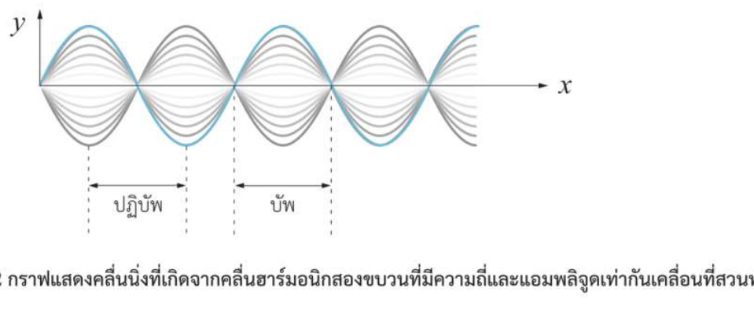
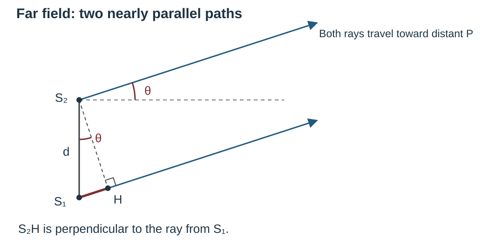
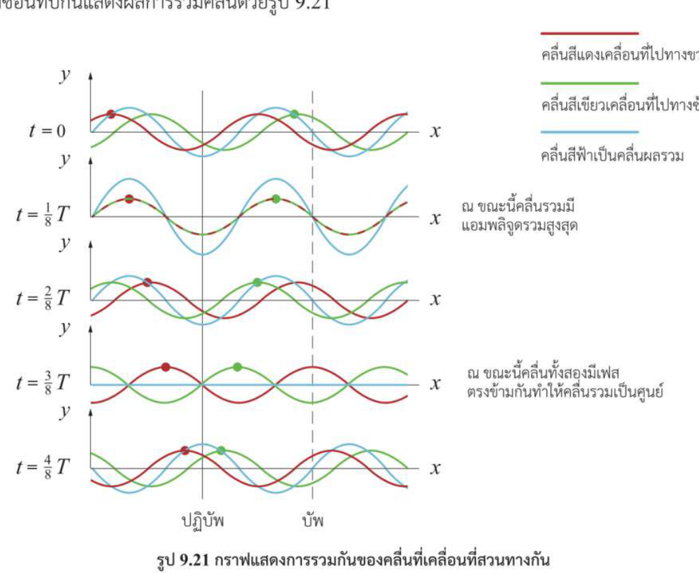
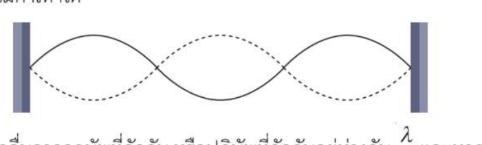
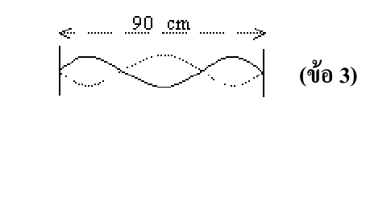

<!doctype html>
<html lang="th" data-learning-html data-learning-sheet="1" data-print-subject-th="ฟิสิกส์" data-print-subject-en="Physics" data-print-chapter-th="บทที่ 9 คลื่น" data-print-chapter-en="Chapter 9 Waves" data-print-topic-th="9.4.3 การแทรกสอดของคลื่น" data-print-topic-en="9.4.3 Wave Interference" data-print-work-th="ใบเรียนรู้" data-print-work-en="Learning Sheet" data-sheet-revision="2026-11-10-qa" data-sheet-guide="guides/interference-9-4-3.guide.json">
<head><meta charset="utf-8"><meta name="viewport" content="width=device-width,initial-scale=1">
<title>9.4.3 การแทรกสอดของคลื่น | Wave Interference</title>
<link rel="stylesheet" href="../../shared/learning-sheet.css">
<style>
*{box-sizing:border-box}body{margin:0;background:#fbfbfd;color:#202c39;font:16px/1.68 "Sarabun",Tahoma,Arial,sans-serif}.ws-page{max-width:900px;margin:auto;padding:24px 28px 48px}.ws-head{margin-bottom:18px;border-bottom:1px solid #8193a9;padding-bottom:10px}.ws-kicker{font-weight:700;font-size:12px;letter-spacing:.04em}.ws-head h1{font-size:24px;margin:0}.ws-head p{margin:5px 0}.ws-section{padding:15px 14px;margin:15px 0;border:1px solid #d6dce7;border-radius:8px;background:white}.ws-section h2{font-size:19px;margin:0 0 12px;font-weight:700}.ws-section p{margin:8px 0}.ws-figure{margin:12px auto;text-align:center;max-width:800px}.ws-figure img{display:block;max-width:100%;max-height:470px;width:auto;height:auto;margin:auto;border:1px solid #e1e6ed;background:#fff}.ws-figure figcaption{font-size:12px;color:#4f5d71;margin:4px auto}.ws-prompt{font-size:18px}.ws-q{padding:12px 12px 10px;border:1px solid #cbd3df;margin:12px 0;border-radius:5px}.ws-q-title{margin:0 0 6px}.ws-source{font-size:12px;color:#526478}.ws-review{font-size:13px;color:#904b31;font-weight:600}.ws-footer{font-size:12px;color:#526174;padding:10px;border-top:1px solid #ccd4e0}[data-sheet-slot]{border:1px solid #c7d0dd;padding:9px 10px;margin:6px 0;max-width:100%;border-radius:4px;min-height:30px}[data-sheet-answer]{line-height:1.7}[data-sheet-answer] p{margin:3px 0}.ws-section>p{max-width:100%}
@media(max-width:650px){.ws-page{padding:14px 10px}.ws-section{padding:11px}.ws-q{padding:8px}.ws-figure img{max-height:330px}}
@media print{body{background:#fff;color:#000;font-size:10pt;line-height:1.45}.ws-page{padding:0;max-width:none}.ws-head{border-color:#555}.ws-head h1,.ws-section h2{font-size:12pt;font-weight:bold}.ws-kicker,.ws-figure figcaption,.ws-source,.ws-footer,.ws-review{font-size:9pt;color:#000}.ws-section{padding:0;margin:8pt 0;border:0;border-radius:0;break-inside:auto}.ws-figure{break-inside:avoid;max-width:100%}.ws-figure img{max-height:98mm;max-width:100%;border-color:#999}.ws-q{margin:6pt 0;padding:5pt;border:0;border-bottom:1px solid #aaa;border-radius:0;break-inside:auto}.ws-q-title{break-after:avoid}[data-sheet-slot]{border:1px solid #777;border-radius:0;margin:4pt 0;padding:5pt;break-inside:avoid}.ws-section h2{border-bottom:1px solid #777;padding-bottom:3pt;break-after:avoid}}

.ws-figure img{object-fit:contain}.ws-study-flow{margin:10px 0;color:#3b4958}.ws-solution{margin:4px 0}.ws-solution img{max-height:180px}
@media print{.ws-prompt{font-size:10pt}.ws-study-flow{color:#000}.ws-solution img{max-height:42mm}}</style>
</head><body><p data-sheet-standalone-note>เปิดผ่าน Learning Hub เพื่อใช้ปุ่มเฉลย ภาษา สมการ และพิมพ์ / Open through Learning Hub for controls, mathematics and printing.</p>
<main class="ws-page"><div data-content-lang="th" lang="th"><header class="ws-head"><p class="ws-kicker">ฟิสิกส์ · บทที่ 9 คลื่น · Y12</p><h1>9.4.3 การแทรกสอดของคลื่น</h1><p>คำถามนำ → สังเกตรูป → ค้นพบสูตร → เรขาคณิต → เฟสตรงข้าม → แบบฝึกจากต้นฉบับครบชุด</p></header>
<p class="ws-study-flow">ใช้หัวข้อ 1–6 เรียนหลักการก่อน แล้วเลือกโจทย์จากหัวข้อ 7–10 เพื่อฝึกตามจุดที่ต้องการ</p><section class="ws-section" data-guide-anchor="wave-part-1"><h2>1. คลื่นมาพบกัน</h2><p class="ws-prompt"><strong>เมื่อคลื่นน้ำสองขบวนเคลื่อนที่มาพบกัน จะเกิดอะไรขึ้นกับคลื่นทั้งสอง?</strong></p><figure data-print-keep class="ws-figure"><figcaption>ภาพคลื่นน้ำจริงที่ครูเลือกใช้เปิดบทเรียน</figcaption></figure><p>คลื่นจากทั้งสองแหล่งเดินทางผ่านบริเวณเดียวกันได้ การกระจัดของผิวน้ำ ณ จุดและขณะหนึ่งเป็นผลรวมเชิงพีชคณิตของการกระจัดจากแต่ละคลื่น</p><figure data-print-keep class="ws-figure"><figcaption>การซ้อนทับ: ยอดร่วมยอดและยอดร่วมท้อง พร้อมแอมพลิจูดเป็นเซนติเมตร</figcaption></figure><p>สูตรบวกการกระจัดเป็นหลักการอ่านได้ทันที: \(y_{\mathrm{total}}=y_1+y_2\). คลื่นแต่ละขบวนยังเคลื่อนที่ต่อหลังผ่านบริเวณซ้อนทับ (ในตัวกลางเชิงเส้น)</p></section>
<section class="ws-section" data-guide-anchor="wave-part-2"><h2>2. บัพ–ปฏิบัพจากรูป</h2><figure data-print-keep class="ws-figure"><figcaption>รูป 9.22 จากหนังสือ สสวท. แสดงคลื่นนิ่งและตำแหน่งบัพ–ปฏิบัพ</figcaption></figure><p>บัพมีการกระจัดรวมเป็นศูนย์ตลอดเวลา ส่วนปฏิบัพมีแอมพลิจูดมากที่สุด การหักล้างเป็นศูนย์ต้องให้คลื่นทั้งสองที่มาถึงจุดนั้นมีแอมพลิจูดเท่ากัน</p><p>คลื่นนิ่งบนเชือกมีบัพติดกันห่าง \(\lambda/2\) และบัพถึงปฏิบัพถัดไปห่าง \(\lambda/4\) เชือกตรึงสองปลายที่เกิด \(n\) ลูปมีความยาว \(L=n\lambda/2\)</p><div data-sheet-slot="node-definition" data-sheet-size="small" data-sheet-layout="block" data-sheet-label-th="นิยามบัพ" data-sheet-label-en="Definition of a node" style="--sheet-print-height: 8mm"><div data-sheet-answer>การกระจัดรวมเป็นศูนย์ตลอดเวลา</div></div><div data-sheet-slot="antinode-definition" data-sheet-size="small" data-sheet-layout="block" data-sheet-label-th="นิยามปฏิบัพ" data-sheet-label-en="Definition of an antinode" style="--sheet-print-height: 8mm"><div data-sheet-answer>ตำแหน่งที่แอมพลิจูดการสั่นมากที่สุด</div></div><figure data-print-keep class="ws-figure"><figcaption>รูป สสวท. 9.24: จุด A, B, C, E, F จากสองแหล่งกำเนิด</figcaption></figure><p>สังเกตจุดที่สัน–สันหรือท้อง–ท้องซ้อนกัน และจุดที่สัน–ท้องซ้อนกัน จากนั้นเปรียบเทียบกับภาพแนวบัพ–ปฏิบัพที่ครูให้</p><figure data-print-keep class="ws-figure"><figcaption>ภาพแนวเสริมและแนวหักล้างที่ครูเลือก</figcaption></figure></section>
<section class="ws-section" data-guide-anchor="wave-part-3"><h2>3. นับ λ แล้วสรุปสูตร</h2><figure data-print-keep class="ws-figure"><figcaption>ใช้รูป 9.24 เดิมนับรัศมีจาก S₁ และ S₂ เป็น λ</figcaption></figure><p>ให้ตามเส้นจาก S₁ และ S₂ ไปยังจุดเดียวกัน นับจำนวนช่วง λ แล้วหักลบระยะทาง ไม่ต้องเดาจากสีเส้นอย่างเดียว ตัวอย่างในหนังสือ: A มี 5λ กับ 6λ, B มี 4.5λ กับ 4.5λ และ C มี 5λ กับ 3.5λ</p><p><strong>\(\Delta r=|S_1P-S_2P|\)</strong> คือผลต่างทางเดินของคลื่นที่จุด P</p><p>แหล่งกำเนิดอาพันธ์มีความถี่เท่ากันและผลต่างเฟสเริ่มต้นคงที่ หากเริ่มเฟสตรงกัน ผลต่างเฟสที่เกิดจากการเดินทางมีขนาด \(2\pi\Delta r/\lambda\) เรเดียน หรือ \(360^\circ\Delta r/\lambda\) เมื่อนับแบบไม่ตัดรอบ เช่น \(\Delta r=\lambda/2\) ให้ผลต่างเฟส \(180^\circ\)</p><p>เมื่อแหล่งกำเนิดมีเฟสตรงกัน จงสรุปสูตรสุดท้ายจากแบบรูป 0, λ, 2λ, … และ λ/2, 3λ/2, …</p><div data-sheet-slot="same-phase-antinode" data-sheet-size="small" data-sheet-layout="block" data-sheet-label-th="สูตรแนวปฏิบัพเฟสตรงกัน" data-sheet-label-en="In-phase antinode condition" style="--sheet-print-height: 9mm"><div data-sheet-answer>\[\Delta r=n\lambda,\quad n=0,1,2,\ldots\]</div></div><div data-sheet-slot="same-phase-node" data-sheet-size="small" data-sheet-layout="block" data-sheet-label-th="สูตรแนวบัพเฟสตรงกัน" data-sheet-label-en="In-phase node condition" style="--sheet-print-height: 9mm"><div data-sheet-answer>\[\Delta r=(n-\tfrac12)\lambda,\quad n=1,2,3,\ldots\]</div></div></section>
<section class="ws-section" data-guide-anchor="wave-part-4"><h2>4. ที่มาของ d sin θ</h2><figure data-print-keep class="ws-figure"><figcaption>รูปเรขาคณิตกรณีระยะไกล มุม θ อยู่ที่ S₂</figcaption></figure><p>เมื่อ P อยู่ไกลมากเมื่อเทียบกับ d ให้แทนแนวเดินทางสองแนวด้วยเส้นขนาน ลากจาก \(S_2\) ตั้งฉากกับแนวของ \(S_1\) ที่ H จะได้ \(\Delta r\approx S_1H\) ในสามเหลี่ยมมุมฉาก \(S_1S_2H\) มุมที่ \(S_2\) ระหว่างฐานกับเส้นตั้งฉากเท่ากับ \(\theta\) จึงได้ \(S_1H=d\sin\theta\)</p><div data-sheet-slot="far-field-condition" data-sheet-size="small" data-sheet-layout="block" data-sheet-label-th="สูตรประมาณผลต่างทางเดินระยะไกล" data-sheet-label-en="Far-field path-difference approximation" style="--sheet-print-height: 9mm"><div data-sheet-answer>\[\Delta r\approx d\sin\theta\]</div></div><p>ข้อควรระวัง: เครื่องหมายประมาณไม่ใช่เท่ากับเสมอ และความใกล้เคียงจะดีเมื่อระยะจากแหล่งถึง P มากกว่า d หลายเท่า</p></section>
<section class="ws-section" data-guide-anchor="wave-part-5"><h2>5. มุมจากจุดกึ่งกลางและฉาก</h2><figure data-print-keep class="ws-figure"><figcaption>เส้นขนานและมุมสมนัย: θ ที่ S₂ กับแนวกลางผ่าน O</figcaption></figure><p>เส้นอ้างอิงทั้งสองขนานกับแนวกลาง เส้นเอียงขนานกันในการประมาณระยะไกล จึงใช้มุมที่กึ่งกลาง O แทนได้ ให้ \(L=OM\) เป็นระยะตั้งฉากถึงฉาก และ \(x=MP\ge0\) เป็นระยะจากกึ่งกลางฉากถึง P</p><figure data-print-keep class="ws-figure"><figcaption>สามเหลี่ยมบนฉาก: L, x และ θ</figcaption></figure><p>\[\tan\theta=\frac{x}{L},\quad \sin\theta=\frac{x}{\sqrt{L^2+x^2}}\]</p><div data-sheet-slot="screen-no-small-angle" data-sheet-size="small" data-sheet-layout="block" data-sheet-label-th="สูตรใช้พิกัดบนฉากโดยยังไม่ประมาณมุมเล็ก" data-sheet-label-en="Screen-coordinate formula without the small-angle step" style="--sheet-print-height: 9mm"><div data-sheet-answer>\[\Delta r\approx\frac{dx}{\sqrt{L^2+x^2}}\]</div></div><p>เมื่อ x≪L มี sinθ≈tanθ≈x/L จึงได้สูตรที่ง่ายขึ้น</p><div data-sheet-slot="screen-small-angle" data-sheet-size="small" data-sheet-layout="block" data-sheet-label-th="สูตรเมื่อ x เล็กกว่า L มาก" data-sheet-label-en="Additional small-angle approximation" style="--sheet-print-height: 9mm"><div data-sheet-answer>\[\Delta r\approx\frac{dx}{L}\]</div></div></section>
<section class="ws-section" data-guide-anchor="wave-part-6"><h2>6. เฟสตรงข้าม</h2><figure data-print-keep class="ws-figure"><figcaption>สองแหล่งกำเนิดที่ระยะ d และ λ เดียวกัน แต่เฟสต่าง 0° เทียบกับ 180°</figcaption></figure><p>ถ้าเริ่มเฟสตรงข้ามกัน ให้รวมผลต่างเฟสเริ่มต้น 180° กับผลจากทางเดิน ตำแหน่งเสริมและหักล้างจึงสลับกัน ที่แนวกลางผลต่างทางเดินเป็นศูนย์ แต่คลื่นยังต่างเฟส 180° จึงหักล้างกันสนิทเมื่อแอมพลิจูดที่มาถึงเท่ากัน</p><div data-sheet-slot="opposite-phase-antinode" data-sheet-size="small" data-sheet-layout="block" data-sheet-label-th="สูตรแนวปฏิบัพเมื่อเฟสตรงข้าม" data-sheet-label-en="Opposite-phase antinode condition" style="--sheet-print-height: 9mm"><div data-sheet-answer>\[\Delta r=(n-\tfrac12)\lambda,\quad n=1,2,3,\ldots\]</div></div><div data-sheet-slot="opposite-phase-node" data-sheet-size="small" data-sheet-layout="block" data-sheet-label-th="สูตรแนวบัพเมื่อเฟสตรงข้าม" data-sheet-label-en="Opposite-phase node condition" style="--sheet-print-height: 9mm"><div data-sheet-answer>\[\Delta r=n\lambda,\quad n=0,1,2,\ldots\]</div></div></section>
<section class="ws-section" data-guide-anchor="wave-part-7"><h2>7. สสวท. ครบในขอบเขตการแทรกสอด</h2><div class="ws-q"><p class="ws-q-title"><strong>IPST 1</strong> · ชวนคิด: ในรูป 9.21 มีตำแหน่งอื่นที่เป็นจุดบัพหรือจุดปฏิบัพหรือไม่?</p><figure data-print-keep class="ws-figure"><figcaption>รูปประกอบโจทย์จากแหล่งที่อ้างอิง</figcaption></figure><p class="ws-source">สสวท. หน้า 88 ชวนคิด</p><div data-sheet-slot="ipst-88-a" data-sheet-size="large" data-sheet-layout="block" data-sheet-label-th="คำตอบและวิธีทำ ipst-88-a" data-sheet-label-en="Answer and working ipst-88-a" style="--sheet-print-height: 27mm"><div data-sheet-answer><p>มีตำแหน่งซ้ำเป็นช่วง ๆ ตามรูปแบบคลื่นนิ่ง จุดบัพอยู่ที่การกระจัดรวมเป็นศูนย์ตลอดเวลา จุดปฏิบัพเป็นตำแหน่งที่แอมพลิจูดมากที่สุด</p></div></div></div><div class="ws-q"><p class="ws-q-title"><strong>IPST 2</strong> · ชวนคิด: คลื่นความถี่และความยาวคลื่นเท่ากัน เคลื่อนสวนกัน แต่แอมพลิจูดไม่เท่ากัน จะเกิดคลื่นนิ่งแบบมีจุดบัพเป็นศูนย์หรือไม่?</p><p class="ws-source">สสวท. หน้า 88 ชวนคิด</p><div data-sheet-slot="ipst-88-b" data-sheet-size="large" data-sheet-layout="block" data-sheet-label-th="คำตอบและวิธีทำ ipst-88-b" data-sheet-label-en="Answer and working ipst-88-b" style="--sheet-print-height: 27mm"><div data-sheet-answer><p>รูปแบบแอมพลิจูดยังมีตำแหน่งต่ำสุดคงที่ แต่คลื่นหักล้างไม่หมด แอมพลิจูดที่ตำแหน่งต่ำสุดคือ \(|A_1-A_2|\) จึงไม่มีบัพศูนย์แบบคลื่นนิ่งสมบูรณ์</p></div></div></div><div class="ws-q"><p class="ws-q-title"><strong>IPST 3</strong> · คำถามท้ายกิจกรรมคลื่นนิ่งในเส้นเชือก: ถ้าเพิ่มแรงตึงเชือก ขณะคงความถี่ของเครื่องเคาะ ลักษณะของคลื่นนิ่งจะเปลี่ยนอย่างไร?</p><p class="ws-source">สสวท. หน้า 89 คำถามท้ายกิจกรรม</p><div data-sheet-slot="ipst-89" data-sheet-size="large" data-sheet-layout="block" data-sheet-label-th="คำตอบและวิธีทำ ipst-89" data-sheet-label-en="Answer and working ipst-89" style="--sheet-print-height: 27mm"><div data-sheet-answer><p>เมื่อเพิ่มแรงตึง \(T\) โดยที่มวลต่อความยาว \(\mu\) คงเดิม อัตราเร็ว \(v=\sqrt{T/\mu}\) เพิ่มขึ้น ที่ความถี่เดิม \(\lambda=v/f\) จึงยาวขึ้น ถ้าเกิดคลื่นนิ่งใหม่ บัพติดกันจะห่างขึ้น \(\lambda/2\) และเชือกยาวเท่าเดิมรองรับจำนวนลูปลดลง หากไม่ตรงเงื่อนไขเรโซแนนซ์ ลูปอาจเห็นไม่ชัด</p></div></div></div><div class="ws-q"><p class="ws-q-title"><strong>IPST 4</strong> · ตัวอย่าง 9.6: ลวดยาว 150 cm มีคลื่นนิ่ง 3 ลูป อัตราเร็ว 50 m/s จงหาความถี่</p><figure data-print-keep class="ws-figure"><figcaption>รูปประกอบโจทย์จากแหล่งที่อ้างอิง</figcaption></figure><p class="ws-source">สสวท. หน้า 90 ตัวอย่าง 9.6</p><div data-sheet-slot="ipst-example-9-6" data-sheet-size="large" data-sheet-layout="block" data-sheet-label-th="คำตอบและวิธีทำ ipst-example-9-6" data-sheet-label-en="Answer and working ipst-example-9-6" style="--sheet-print-height: 27mm"><div data-sheet-answer><p>เริ่มจาก \(L=3\lambda/2\) → \(\lambda=2L/3=2(1.50)/3=1.00\,\mathrm{m}\). จาก \(v=f\lambda\) → \(f=v/\lambda=(50\,\mathrm{m/s})/(1.00\,\mathrm{m})=50\,\mathrm{Hz}\). <strong>ตอบ 50 Hz</strong></p></div></div></div><div class="ws-q"><p class="ws-q-title"><strong>IPST 5</strong> · คำถามก่อนกิจกรรม 9.4: เมื่อแหล่งกำเนิดคลื่นสองแหล่งในตัวกลางเดียวกันปล่อยคลื่นออกมาพบกัน จะเกิดปรากฏการณ์ใด?</p><p class="ws-source">สสวท. หน้า 90 คำถามนำก่อนกิจกรรม 9.4</p><div data-sheet-slot="ipst-90-intro" data-sheet-size="large" data-sheet-layout="block" data-sheet-label-th="คำตอบและวิธีทำ ipst-90-intro" data-sheet-label-en="Answer and working ipst-90-intro" style="--sheet-print-height: 27mm"><div data-sheet-answer><p>เกิดการซ้อนทับหรือการแทรกสอดของคลื่น (wave interference) ตามหลักการบวกการกระจัด</p></div></div></div><div class="ws-q"><p class="ws-q-title"><strong>IPST 6</strong> · กิจกรรม 9.4: เหตุใดภาพคลื่นน้ำจากปุ่มกำเนิดสองแหล่งจึงเกิดแถบมืด?</p><figure data-print-keep class="ws-figure"><figcaption>รูปประกอบโจทย์จากแหล่งที่อ้างอิง</figcaption></figure><p class="ws-source">สสวท. หน้า 91 คำถามท้ายกิจกรรม</p><div data-sheet-slot="ipst-91" data-sheet-size="large" data-sheet-layout="block" data-sheet-label-th="คำตอบและวิธีทำ ipst-91" data-sheet-label-en="Answer and working ipst-91" style="--sheet-print-height: 27mm"><div data-sheet-answer><p>บริเวณแถบมืดเป็นตำแหน่งที่คลื่นหักล้างกัน โดยคลื่นจากสองแหล่งมีการกระจัดตรงข้ามกันเมื่อมาถึง ทำให้ความแปรผันของระดับผิวน้ำน้อย</p></div></div></div><div class="ws-q"><p class="ws-q-title"><strong>IPST 7</strong> · ใช้รูป 9.24: จุด E และ F มีผลต่างทางเดินเท่าใด และเป็นการเสริมหรือหักล้างกัน?</p><figure data-print-keep class="ws-figure"><figcaption>รูปประกอบโจทย์จากแหล่งที่อ้างอิง</figcaption></figure><p class="ws-source">สสวท. หน้า 94 คำถามต่อจากรูป 9.24</p><div data-sheet-slot="ipst-94-ef" data-sheet-size="large" data-sheet-layout="block" data-sheet-label-th="คำตอบและวิธีทำ ipst-94-ef" data-sheet-label-en="Answer and working ipst-94-ef" style="--sheet-print-height: 27mm"><div data-sheet-answer><p><strong>E</strong> อ่านจากรูปได้ \(S_1E=3\lambda\) และ \(S_2E=2.5\lambda\) ดังนั้น \(\Delta r=0.5\lambda\) สันคลื่นเจอท้องคลื่น จึงหักล้างและเป็นบัพอันดับแรก</p><p><strong>F</strong> อ่านได้ \(S_1F=3.5\lambda\) และ \(S_2F=5.5\lambda\) ดังนั้น \(\Delta r=2\lambda\) ท้องคลื่นเจอท้องคลื่น จึงเสริมและเป็นปฏิบัพอันดับสอง</p></div></div></div><div class="ws-q"><p class="ws-q-title"><strong>IPST 8</strong> · ชวนคิด: ถ้าสันคลื่นหรือท้องคลื่นไม่ซ้อนตรงกับสันหรือท้องพอดี จะเป็นการแทรกสอดแบบใด?</p><p class="ws-source">สสวท. หน้า 94 ชวนคิด</p><div data-sheet-slot="ipst-94-intermediate" data-sheet-size="large" data-sheet-layout="block" data-sheet-label-th="คำตอบและวิธีทำ ipst-94-intermediate" data-sheet-label-en="Answer and working ipst-94-intermediate" style="--sheet-print-height: 27mm"><div data-sheet-answer><p>คลื่นยังซ้อนทับตามหลักการบวกการกระจัด แต่การเสริมหรือหักล้างเกิดเพียงบางส่วน ขึ้นอยู่กับผลต่างเฟสที่จุดนั้น</p></div></div></div><div class="ws-q"><p class="ws-q-title"><strong>IPST 9</strong> · ชวนคิด: เมื่อเฟสเริ่มต้นของแหล่งกำเนิดต่างกัน 180° เงื่อนไขการเสริมและหักล้างเปลี่ยนอย่างไร เพราะเหตุใด?</p><p class="ws-source">สสวท. หน้า 94 ชวนคิด</p><div data-sheet-slot="ipst-94-opposite" data-sheet-size="large" data-sheet-layout="block" data-sheet-label-th="คำตอบและวิธีทำ ipst-94-opposite" data-sheet-label-en="Answer and working ipst-94-opposite" style="--sheet-print-height: 27mm"><div data-sheet-answer><p>เงื่อนไขสลับกัน: เสริมเมื่อ \(\Delta r=(n-\tfrac12)\lambda\) สำหรับ \(n=1,2,\dots\), หักล้างเมื่อ \(\Delta r=n\lambda\) สำหรับ \(n=0,1,\dots\). เพราะเฟสเริ่มต้นเพิ่มความต่างเฟส \(\pi\)</p></div></div></div><div class="ws-q"><p class="ws-q-title"><strong>IPST 10</strong> · ชวนคิด: เหตุใดรูป 9.26 จึงไม่มีแนวที่มีผลต่างทางเดินเกิน 2λ?</p><figure data-print-keep class="ws-figure"><figcaption>รูปประกอบโจทย์จากแหล่งที่อ้างอิง</figcaption></figure><p class="ws-source">สสวท. หน้า 95 ชวนคิด</p><div data-sheet-slot="ipst-95-limit" data-sheet-size="large" data-sheet-layout="block" data-sheet-label-th="คำตอบและวิธีทำ ipst-95-limit" data-sheet-label-en="Answer and working ipst-95-limit" style="--sheet-print-height: 27mm"><div data-sheet-answer><p>สำหรับระยะห่างแหล่งกำเนิด \(d=2\lambda\), อสมการสามเหลี่ยมให้ \(|S_1P-S_2P|\le d=2\lambda\). จึงไม่มีผลต่างทางเดินมากกว่านี้</p></div></div></div><div class="ws-q"><p class="ws-q-title"><strong>IPST 11</strong> · ชวนคิด: ถ้าแหล่งกำเนิดสองแหล่งต่างเฟสกัน 180° แนวที่จุดมีระยะทางจากสองแหล่งเท่ากันจะเป็นแนวชนิดใด?</p><p class="ws-source">สสวท. หน้า 95 ชวนคิด</p><div data-sheet-slot="ipst-95-middle" data-sheet-size="large" data-sheet-layout="block" data-sheet-label-th="คำตอบและวิธีทำ ipst-95-middle" data-sheet-label-en="Answer and working ipst-95-middle" style="--sheet-print-height: 27mm"><div data-sheet-answer><p>เป็นแนวบัพ เพราะ \(\Delta r=0\) แต่เฟสจากต้นกำเนิดต่างกัน \(\pi\) ทำให้การกระจัดหักล้างกัน (เมื่อแอมพลิจูดเท่ากัน)</p></div></div></div><div class="ws-q"><p class="ws-q-title"><strong>IPST 12</strong> · แบบฝึกหัดท้ายบท ข้อ 5: คลื่นดลสองลูกบนเชือกวิ่งเข้าหากัน เมื่อพบกันจะสะท้อนจากกันหรือไม่? อธิบาย</p><p class="ws-source">สสวท. หน้า 102 คำถาม 5</p><div data-sheet-slot="ipst-end-5" data-sheet-size="large" data-sheet-layout="block" data-sheet-label-th="คำตอบและวิธีทำ ipst-end-5" data-sheet-label-en="Answer and working ipst-end-5" style="--sheet-print-height: 27mm"><div data-sheet-answer><p>โดยประมาณในตัวกลางเชิงเส้น คลื่นแต่ละลูกเคลื่อนผ่านกันหลังจากซ้อนทับ โดยไม่สะท้อนจากอีกลูกหนึ่ง การกระจัดรวมระหว่างซ้อนทับเป็นผลรวมเชิงพีชคณิต</p></div></div></div><div class="ws-q"><p class="ws-q-title"><strong>IPST 13</strong> · ท้ายบท ข้อ 6 ก: คลื่นสองขบวนซ้อนทับกัน เงื่อนไขใดที่แอมพลิจูดรวมมากกว่าคลื่นแต่ละขบวน?</p><p class="ws-source">สสวท. หน้า 102 คำถาม 6 ก</p><div data-sheet-slot="ipst-end-6a" data-sheet-size="large" data-sheet-layout="block" data-sheet-label-th="คำตอบและวิธีทำ ipst-end-6a" data-sheet-label-en="Answer and working ipst-end-6a" style="--sheet-print-height: 27mm"><div data-sheet-answer><p>เมื่อคลื่นเสริมกันมากพอ เช่น เมื่อเฟสตรงกัน จะได้แอมพลิจูดรวม \(A_1+A_2\) ซึ่งมากกว่าแอมพลิจูดของคลื่นแต่ละขบวน</p></div></div></div><div class="ws-q"><p class="ws-q-title"><strong>IPST 14</strong> · ท้ายบท ข้อ 6 ข: เงื่อนไขใดที่แอมพลิจูดรวมต่ำกว่าคลื่นที่มาซ้อนทับ?</p><p class="ws-source">สสวท. หน้า 102 คำถาม 6 ข</p><div data-sheet-slot="ipst-end-6b" data-sheet-size="large" data-sheet-layout="block" data-sheet-label-th="คำตอบและวิธีทำ ipst-end-6b" data-sheet-label-en="Answer and working ipst-end-6b" style="--sheet-print-height: 27mm"><div data-sheet-answer><p>ต้องหักล้างกันมากพอ เช่น เมื่อเฟสตรงข้ามกัน แอมพลิจูดรวมคือ \(|A_1-A_2|\) ค่านี้น้อยกว่าแอมพลิจูดทั้งสองเมื่อแอมพลิจูดใหญ่มีค่าน้อยกว่าสองเท่าของแอมพลิจูดเล็ก</p></div></div></div><div class="ws-q"><p class="ws-q-title"><strong>IPST 15</strong> · ท้ายบท ข้อ 6 ค: เงื่อนไขใดที่แอมพลิจูดรวมเป็นศูนย์?</p><p class="ws-source">สสวท. หน้า 102 คำถาม 6 ค</p><div data-sheet-slot="ipst-end-6c" data-sheet-size="large" data-sheet-layout="block" data-sheet-label-th="คำตอบและวิธีทำ ipst-end-6c" data-sheet-label-en="Answer and working ipst-end-6c" style="--sheet-print-height: 27mm"><div data-sheet-answer><p>ต้องมีการกระจัดตรงข้ามทุกขณะและแอมพลิจูดเท่ากัน เช่น คลื่นเฟสต่าง 180° และ \(A_1=A_2\)</p></div></div></div><div class="ws-q"><p class="ws-q-title"><strong>IPST 16</strong> · ท้ายบท ข้อ 7: การแทรกสอดแบบเสริมและหักล้างทำให้พลังงานเพิ่มขึ้นหรือสูญหายไปหรือไม่?</p><p class="ws-source">สสวท. หน้า 102 คำถาม 7</p><div data-sheet-slot="ipst-end-7" data-sheet-size="large" data-sheet-layout="block" data-sheet-label-th="คำตอบและวิธีทำ ipst-end-7" data-sheet-label-en="Answer and working ipst-end-7" style="--sheet-print-height: 27mm"><div data-sheet-answer><p>ไม่ พลังงานรวมของระบบไม่ได้เกิดหรือสูญหายเพียงเพราะการซ้อนทับ แต่กระจายระหว่างบริเวณสั่นแรงและสั่นอ่อน</p></div></div></div><div class="ws-q"><p class="ws-q-title"><strong>IPST 17</strong> · ท้ายบท ข้อ 8: คลื่นสองขบวนความถี่เท่ากัน แอมพลิจูดต่างกัน ต้องต่างเฟสเท่าใดจึงให้แอมพลิจูดรวมมากสุด/น้อยสุด และมีค่าเท่าใด?</p><p class="ws-source">สสวท. หน้า 102 คำถาม 8</p><div data-sheet-slot="ipst-end-8" data-sheet-size="large" data-sheet-layout="block" data-sheet-label-th="คำตอบและวิธีทำ ipst-end-8" data-sheet-label-en="Answer and working ipst-end-8" style="--sheet-print-height: 27mm"><div data-sheet-answer><p>มากสุดเมื่อเฟสต่าง \(0^\circ\) (หรือ \(360^\circ k\)), ได้ \(A_\max=A_1+A_2\). น้อยสุดเมื่อเฟสต่าง \(180^\circ\) (หรือ \((2k+1)180^\circ\)), ได้ \(A_\min=|A_1-A_2|\)</p></div></div></div><div class="ws-q"><p class="ws-q-title"><strong>IPST 18</strong> · ข้อท้าทาย 8 ก. พัลส์สองลูกตามรูปวิ่งเข้าหากันด้วยอัตราเร็วลูกละ 1.0 m/s ใช้เวลานานเท่าไรจึงซ้อนทับพอดี?</p><figure data-print-keep class="ws-figure"><figcaption>รูปประกอบโจทย์จากแหล่งที่อ้างอิง</figcaption></figure><p class="ws-source">สสวท. หน้า 104 ปัญหาท้าทาย 8 ก–ข</p><div data-sheet-slot="ipst-challenge-8" data-sheet-size="large" data-sheet-layout="block" data-sheet-label-th="คำตอบและวิธีทำ ipst-challenge-8" data-sheet-label-en="Answer and working ipst-challenge-8" style="--sheet-print-height: 16mm"><div data-sheet-answer><p>ยอดเริ่มที่ 10 และ 30 cm ห่างกัน 0.20 m อัตราเร็วที่เข้าใกล้กันคือ \(1.0+1.0=2.0\,\mathrm{m/s}\) จึงได้ \(t=0.20/2.0=0.10\,\mathrm{s}\).</p></div></div><p class="ws-q-title"><strong>ข. วาดกราฟการกระจัดรวมที่ 0.10 s และ 0.20 s</strong></p><div data-sheet-slot="ipst-challenge-8-sketch" data-sheet-size="large" data-sheet-layout="block" data-sheet-label-th="กราฟการกระจัดรวม" data-sheet-label-en="Resultant displacement sketches" style="--sheet-print-height: 36mm"><div data-sheet-answer><p>ที่ 0.10 s ยอดซ้อนกันที่ x = 20 cm อ่านจากกราฟได้ประมาณ +5 และ +9 cm จึงรวมประมาณ +14 cm ที่ 0.20 s พัลส์สูงอยู่ที่ x = 10 cm และพัลส์เตี้ยอยู่ที่ x = 30 cm โดยแต่ละลูกคงรูปร่างเดิม</p><figure class="ws-figure ws-solution"><figcaption>แผนภาพเฉลยหลังซ้อนทับ</figcaption></figure></div></div></div><div class="ws-q"><p class="ws-q-title"><strong>IPST 19</strong> · ข้อท้าทาย 9 ก. พัลส์ยอดและท้องตามรูปเคลื่อนเข้าหากันด้วยอัตราเร็วเท่ากัน และซ้อนทับพอดีที่ 1 s จงหาอัตราเร็ว</p><figure data-print-keep class="ws-figure"><figcaption>รูปประกอบโจทย์จากแหล่งที่อ้างอิง</figcaption></figure><p class="ws-source">สสวท. หน้า 104 ปัญหาท้าทาย 9 ก–ข</p><div data-sheet-slot="ipst-challenge-9" data-sheet-size="large" data-sheet-layout="block" data-sheet-label-th="คำตอบและวิธีทำ ipst-challenge-9" data-sheet-label-en="Answer and working ipst-challenge-9" style="--sheet-print-height: 16mm"><div data-sheet-answer><p>ยอดและท้องเริ่มที่ 2 และ 6 cm จึงห่างกัน 4 cm ใน 1 s แต่ละลูกเดินทาง 2 cm จึงได้ \(v=2\,\mathrm{cm/s}\).</p></div></div><p class="ws-q-title"><strong>ข. วาดกราฟการกระจัดรวมที่ 1 s และ 2 s</strong></p><div data-sheet-slot="ipst-challenge-9-sketch" data-sheet-size="large" data-sheet-layout="block" data-sheet-label-th="กราฟการกระจัดรวม" data-sheet-label-en="Resultant displacement sketches" style="--sheet-print-height: 36mm"><div data-sheet-answer><p>ที่ 1 s ยอดและท้องซ้อนที่ x = 4 cm อ่านได้ประมาณ +5 และ −9 cm จึงรวมประมาณ −4 cm ที่ 2 s ท้องอยู่ที่ x = 2 cm และยอดอยู่ที่ x = 6 cm โดยแต่ละลูกคงรูปร่างเดิม</p><figure class="ws-figure ws-solution"><figcaption>แผนภาพเฉลยพัลส์ยอดและท้อง</figcaption></figure></div></div></div><div class="ws-q"><p class="ws-q-title"><strong>IPST 20</strong> · ปัญหาท้าทาย ข้อ 10: คลื่นน้ำ f=50 Hz, v=1.0 m/s ตำแหน่งที่เฟสต่าง 180° ห่างกันเท่าใด?</p><p class="ws-source">สสวท. หน้า 104 ปัญหาท้าทาย 10</p><div data-sheet-slot="ipst-challenge-10" data-sheet-size="large" data-sheet-layout="block" data-sheet-label-th="คำตอบและวิธีทำ ipst-challenge-10" data-sheet-label-en="Answer and working ipst-challenge-10" style="--sheet-print-height: 27mm"><div data-sheet-answer><p>เริ่มจาก \(v=f\lambda\) → \(\lambda=v/f=1.0/50=0.020\,\mathrm{m}\). เฟสต่าง 180° ระยะใกล้สุด \(\Delta x=\lambda/2=0.010\,\mathrm{m}=1.0\,\mathrm{cm}\)</p></div></div></div></section>
<section class="ws-section" data-guide-anchor="wave-part-8"><h2>8. Physics Online III การแทรกสอด</h2><div class="ws-q"><p class="ws-q-title"><strong>PEC 47</strong> · ข้อ 47: คลื่นสองขบวน A,f,λ และเฟสเท่ากันซ้อนกัน แอมพลิจูดและความถี่ของคลื่นรวมเป็นอย่างไร?</p><p class="ws-source">Physics Online III หน้า 82 ข้อ 47</p><div data-sheet-slot="pec-47" data-sheet-size="large" data-sheet-layout="block" data-sheet-label-th="คำตอบและวิธีทำ pec-47" data-sheet-label-en="Answer and working pec-47" style="--sheet-print-height: 27mm"><div data-sheet-answer><p>เมื่อคลื่นเหมือนกันมาถึงเฟสตรงกัน การกระจัดบวกกันได้แอมพลิจูด \(2A\) ส่วนความถี่เท่าเดิม</p></div></div></div><div class="ws-q"><p class="ws-q-title"><strong>PEC 48</strong> · ข้อ 48: เมื่อคลื่นหักล้างกันสมบูรณ์ ผลต่างเฟสควรเป็นเท่าใด?</p><p class="ws-source">Physics Online III หน้า 82 ข้อ 48</p><div data-sheet-slot="pec-48" data-sheet-size="large" data-sheet-layout="block" data-sheet-label-th="คำตอบและวิธีทำ pec-48" data-sheet-label-en="Answer and working pec-48" style="--sheet-print-height: 27mm"><div data-sheet-answer><p>เฟสต่างกัน \(180^\circ\) หรือเลขคี่เท่าของ \(180^\circ\) คลื่นที่มีแอมพลิจูดเท่ากันจึงหักล้างกันสนิท</p></div></div></div><div class="ws-q"><p class="ws-q-title"><strong>PEC 49</strong> · ข้อ 49: ตามรูปจุด P อยู่บน A₂ ห่างจากแหล่ง 5 m และ 1 m ก. จงหาความยาวคลื่น</p><figure data-print-keep class="ws-figure"><figcaption>รูปประกอบโจทย์จากแหล่งที่อ้างอิง</figcaption></figure><p class="ws-source">Physics Online III หน้า 83 ข้อ 49 ก–ข</p><div data-sheet-slot="pec-49" data-sheet-size="large" data-sheet-layout="block" data-sheet-label-th="คำตอบและวิธีทำ pec-49" data-sheet-label-en="Answer and working pec-49" style="--sheet-print-height: 16mm"><div data-sheet-answer><p>ใช้ \(\Delta r=2\lambda\) จัดรูปและแทนค่าได้ \(\lambda=|5-1|/2=2\,\mathrm{m}\).</p></div></div><p class="ws-q-title"><strong>ข. เมื่อความถี่เท่ากับ 100 Hz จงหาอัตราเร็ว</strong></p><div data-sheet-slot="pec-49-speed" data-sheet-size="large" data-sheet-layout="block" data-sheet-label-th="หาอัตราเร็ว" data-sheet-label-en="Find the speed" style="--sheet-print-height: 16mm"><div data-sheet-answer><p>\(v=f\lambda=100(2)=200\,\mathrm{m/s}\).</p></div></div></div><div class="ws-q"><p class="ws-q-title"><strong>PEC 50</strong> · ข้อ 50: แนว A₂ ทำมุม 30° กับแนวกลาง และแหล่งกำเนิดห่างกัน 8 m ก. จงหาความยาวคลื่น</p><p class="ws-source">Physics Online III หน้า 83 ข้อ 50 ก–ข</p><div data-sheet-slot="pec-50" data-sheet-size="large" data-sheet-layout="block" data-sheet-label-th="คำตอบและวิธีทำ pec-50" data-sheet-label-en="Answer and working pec-50" style="--sheet-print-height: 16mm"><div data-sheet-answer><p>ใช้ \(d\sin\theta\approx2\lambda\) จัดรูปและแทนค่าได้ \(\lambda=d\sin30^\circ/2=8(0.5)/2=2\,\mathrm{m}\).</p></div></div><p class="ws-q-title"><strong>ข. เมื่ออัตราเร็วเท่ากับ 300 m/s จงหาความถี่</strong></p><div data-sheet-slot="pec-50-frequency" data-sheet-size="large" data-sheet-layout="block" data-sheet-label-th="หาความถี่" data-sheet-label-en="Find the frequency" style="--sheet-print-height: 16mm"><div data-sheet-answer><p>\(f=v/\lambda=300/2=150\,\mathrm{Hz}\).</p></div></div></div><div class="ws-q"><p class="ws-q-title"><strong>PEC 51</strong> · ข้อ 51: แหล่งเฟสตรงกัน d=6 cm, v=40 cm/s, f=20 Hz จงหามุม A₃</p><p class="ws-source">Physics Online III หน้า 84 ข้อ 51</p><div data-sheet-slot="pec-51" data-sheet-size="large" data-sheet-layout="block" data-sheet-label-th="คำตอบและวิธีทำ pec-51" data-sheet-label-en="Answer and working pec-51" style="--sheet-print-height: 27mm"><div data-sheet-answer><p>เริ่ม \(v=f\lambda\) → \(\lambda=v/f=40/20=2\,\mathrm{cm}\). จาก \(d\sin\theta=n\lambda\), จัดรูป \(\sin\theta=3(2)/6=1\) → \(\theta=90^\circ\). <strong>หมายเหตุ</strong> เป็นทิศลิมิตของแนวในอุดมคติ ควรพิจารณาข้อจำกัดการประมาณระยะไกล</p></div></div></div><div class="ws-q"><p class="ws-q-title"><strong>PEC 52</strong> · ข้อ 52: จากรูป P อยู่บนแนวบัพ โดย \(S_1P=10\,\mathrm{cm}\), \(S_2P=7\,\mathrm{cm}\) และ \(v=30\,\mathrm{cm/s}\) จงหาอันดับบัพจากรูปแล้วหาความถี่</p><figure data-print-keep class="ws-figure"><figcaption>รูปประกอบโจทย์จากแหล่งที่อ้างอิง</figcaption></figure><p class="ws-source">Physics Online III หน้า 84 ข้อ 52</p><div data-sheet-slot="pec-52" data-sheet-size="large" data-sheet-layout="block" data-sheet-label-th="คำตอบและวิธีทำ pec-52" data-sheet-label-en="Answer and working pec-52" style="--sheet-print-height: 27mm"><div data-sheet-answer><p>อ่านรูป P อยู่บน N₁ ก่อนใช้สูตร \(\Delta r=(n-\tfrac12)\lambda\). หาผลต่าง \(\Delta r=|10-7|=3\,\mathrm{cm}\); จัดรูป \(\lambda=\Delta r/(1-\tfrac12)=3/0.5=6\,\mathrm{cm}\). เริ่มจาก \(v=f\lambda\), จัดรูป \(f=v/\lambda=30/6=5\,\mathrm{Hz}\). <strong>ตอบ 5 Hz</strong></p></div></div></div><div class="ws-q"><p class="ws-q-title"><strong>PEC 53</strong> · ข้อ 53: จากรูป P อยู่บนแนวบัพ โดย \(S_1P=15\,\mathrm{cm}\), \(S_2P=5\,\mathrm{cm}\) และ \(v=50\,\mathrm{cm/s}\) จงหาอันดับบัพจากรูปแล้วหาความถี่</p><figure data-print-keep class="ws-figure"><figcaption>รูปประกอบโจทย์จากแหล่งที่อ้างอิง</figcaption></figure><p class="ws-source">Physics Online III หน้า 84 ข้อ 53</p><div data-sheet-slot="pec-53" data-sheet-size="large" data-sheet-layout="block" data-sheet-label-th="คำตอบและวิธีทำ pec-53" data-sheet-label-en="Answer and working pec-53" style="--sheet-print-height: 27mm"><div data-sheet-answer><p>อ่านรูป P อยู่บน N₂. เริ่มจาก \(\Delta r=(n-\tfrac12)\lambda\), จัดรูป \(\lambda=\Delta r/(2-\tfrac12)=|15-5|/1.5=6.667\,\mathrm{cm}\). จาก \(v=f\lambda\), \(f=v/\lambda=50/6.667=7.50\,\mathrm{Hz}\). <strong>ตอบ 7.50 Hz</strong></p></div></div></div><div class="ws-q"><p class="ws-q-title"><strong>PEC 54</strong> · ข้อ 54: แหล่งเฟสตรงกัน d=8.0 cm, λ=4.0 cm จะมีจุดบัพกี่จุดบนเส้นตรงระหว่างสองแหล่ง?</p><p class="ws-source">Physics Online III หน้า 85 ข้อ 54</p><div data-sheet-slot="pec-54" data-sheet-size="large" data-sheet-layout="block" data-sheet-label-th="คำตอบและวิธีทำ pec-54" data-sheet-label-en="Answer and working pec-54" style="--sheet-print-height: 27mm"><div data-sheet-answer><p>บนช่วงระหว่างแหล่ง \(|\Delta r|&lt;8\). บัพต้อง \(|\Delta r|=(n-\tfrac12)4=2,6,\dots\,\mathrm{cm}\) จึงมีค่า 2 และ 6 แต่ละค่ามีซ้าย–ขวา รวม <strong>4 จุด</strong></p></div></div></div><div class="ws-q"><p class="ws-q-title"><strong>PEC 55</strong> · ข้อ 55: แหล่งเฟสตรงกัน d=16 cm, λ=4 cm ถามจำนวนแนวปฏิบัพ “ระหว่าง” สองแหล่ง</p><p class="ws-source">Physics Online III หน้า 85 ข้อ 55</p><div data-sheet-slot="pec-55" data-sheet-size="large" data-sheet-layout="block" data-sheet-label-th="คำตอบและวิธีทำ pec-55" data-sheet-label-en="Answer and working pec-55" style="--sheet-print-height: 27mm"><div data-sheet-answer><p>ระหว่างแหล่งกำเนิดแบบไม่รวมปลายมี \(\Delta r\lt16\,\mathrm{cm}\) อันดับที่เป็นไปได้คือ \(n=0,1,2,3\) จึงได้ \(1+2(3)=7\) จุด ค่าตามเฉลยต้นฉบับ 9 จะเกิดเมื่อใส่ตำแหน่งปลายทั้งสองเพิ่มตามสมการ แต่ตำแหน่งตัวแหล่งกำเนิดอยู่นอกช่วงที่โจทย์ฉบับนี้ให้นับ</p></div></div></div><div class="ws-q"><p class="ws-q-title"><strong>PEC 56</strong> · ข้อ 56: แหล่งกำเนิดเฟสตรงกันห่างกัน 10 cm ให้คลื่นยาว 2 cm จุด P ห่างจากแหล่งทั้งสอง 10 และ 19 cm ตามลำดับ จุดนี้อยู่บนแนวบัพหรือปฏิบัพอันดับใด</p><p class="ws-source">Physics Online III หน้า 85 ข้อ 56</p><div data-sheet-slot="pec-56" data-sheet-size="large" data-sheet-layout="block" data-sheet-label-th="คำตอบและวิธีทำ pec-56" data-sheet-label-en="Answer and working pec-56" style="--sheet-print-height: 27mm"><div data-sheet-answer><p>เริ่ม \(\Delta r=|19-10|=9\,\mathrm{cm}\). จากแนวบัพ \(\Delta r=(n-\tfrac12)\lambda\), จัดรูป \(n=\Delta r/\lambda+\tfrac12=9/2+1/2=5\). <strong>ตอบ แนวบัพที่ 5</strong></p></div></div></div><div class="ws-q"><p class="ws-q-title"><strong>PEC Review 27</strong> · ข้อท้ายบท 27: ใช้รูปที่ให้ จุด P อยู่บน A₂ ห่างจากแหล่ง 5 m และ 1 m ก. จงหาความยาวคลื่น</p><figure data-print-keep class="ws-figure"><figcaption>รูปประกอบโจทย์จากแหล่งที่อ้างอิง</figcaption></figure><p class="ws-source">Physics Online III หน้า 92 ข้อ 27 ก–ข</p><div data-sheet-slot="pec-r27" data-sheet-size="large" data-sheet-layout="block" data-sheet-label-th="คำตอบและวิธีทำ pec-r27" data-sheet-label-en="Answer and working pec-r27" style="--sheet-print-height: 16mm"><div data-sheet-answer><p>ใช้ \(\Delta r=2\lambda\) จัดรูปและแทนค่าได้ \(\lambda=|5-1|/2=2\,\mathrm{m}\).</p></div></div><p class="ws-q-title"><strong>ข. เมื่อความถี่เท่ากับ 150 Hz จงหาอัตราเร็ว</strong></p><div data-sheet-slot="pec-r27-speed" data-sheet-size="large" data-sheet-layout="block" data-sheet-label-th="หาอัตราเร็ว" data-sheet-label-en="Find the speed" style="--sheet-print-height: 16mm"><div data-sheet-answer><p>\(v=f\lambda=150(2)=300\,\mathrm{m/s}\).</p></div></div></div><div class="ws-q"><p class="ws-q-title"><strong>PEC Review 28</strong> · ข้อท้ายบท 28: แนว A₂ ทำมุม 30° กับแนวกลาง และแหล่งกำเนิดห่างกัน 10 m ก. จงหาความยาวคลื่น</p><p class="ws-source">Physics Online III หน้า 92 ข้อ 28 ก–ข</p><div data-sheet-slot="pec-r28" data-sheet-size="large" data-sheet-layout="block" data-sheet-label-th="คำตอบและวิธีทำ pec-r28" data-sheet-label-en="Answer and working pec-r28" style="--sheet-print-height: 16mm"><div data-sheet-answer><p>ใช้ \(d\sin\theta\approx2\lambda\) จัดรูปและแทนค่าได้ \(\lambda=d\sin30^\circ/2=10(0.5)/2=2.5\,\mathrm{m}\).</p></div></div><p class="ws-q-title"><strong>ข. เมื่ออัตราเร็วเท่ากับ 100 m/s จงหาความถี่</strong></p><div data-sheet-slot="pec-r28-frequency" data-sheet-size="large" data-sheet-layout="block" data-sheet-label-th="หาความถี่" data-sheet-label-en="Find the frequency" style="--sheet-print-height: 16mm"><div data-sheet-answer><p>\(f=v/\lambda=100/2.5=40\,\mathrm{Hz}\).</p></div></div></div><div class="ws-q"><p class="ws-q-title"><strong>PEC Review 29</strong> · ท้ายบท ข้อ 29: d=6 cm, v=40 cm/s, f=20 Hz มุมของ A₃?</p><p class="ws-source">Physics Online III หน้า 92 ข้อ 29</p><div data-sheet-slot="pec-r29" data-sheet-size="large" data-sheet-layout="block" data-sheet-label-th="คำตอบและวิธีทำ pec-r29" data-sheet-label-en="Answer and working pec-r29" style="--sheet-print-height: 27mm"><div data-sheet-answer><p>เริ่ม \(\lambda=v/f=40/20=2\,\mathrm{cm}\). จาก \(d\sin\theta=3\lambda\) → \(\sin\theta=6/6=1\), \(\theta=90^\circ\). เป็นกรณีขอบเขตของแบบจำลองระยะไกล</p></div></div></div><div class="ws-q"><p class="ws-q-title"><strong>PEC Review 30</strong> · ข้อท้ายบท 30: จากรูป P อยู่บนแนวบัพ โดย \(S_1P=10\,\mathrm{cm}\), \(S_2P=6\,\mathrm{cm}\) และ \(v=32\,\mathrm{cm/s}\) จงหาอันดับบัพจากรูปแล้วหาความถี่</p><figure data-print-keep class="ws-figure"><figcaption>รูปประกอบโจทย์จากแหล่งที่อ้างอิง</figcaption></figure><p class="ws-source">Physics Online III หน้า 92 ข้อ 30</p><div data-sheet-slot="pec-r30" data-sheet-size="large" data-sheet-layout="block" data-sheet-label-th="คำตอบและวิธีทำ pec-r30" data-sheet-label-en="Answer and working pec-r30" style="--sheet-print-height: 27mm"><div data-sheet-answer><p>จากรูป P อยู่ N₁. ใช้ \(\Delta r=(n-\tfrac12)\lambda\); \(\Delta r=|10-6|=4\,\mathrm{cm}\), จัดรูป \(\lambda=4/0.5=8\,\mathrm{cm}\). ใช้ \(v=f\lambda\) → \(f=32/8=4\,\mathrm{Hz}\). <strong>ตอบที่ถูกต้อง 4 Hz; เฉลยต้นฉบับ 5 Hz ไม่ตรงข้อมูล</strong></p></div></div></div><div class="ws-q"><p class="ws-q-title"><strong>PEC Review 31</strong> · ท้ายบท ข้อ 31: แหล่งเฟสตรงกัน λ=3 cm จุด A ห่าง S₁ 6 cm เป็นแนวบัพแรก จงหา S₂A (ตัวเลือก 1.5, 3.0, 4.5, 6.0 cm)</p><p class="ws-source">Physics Online III หน้า 92 ข้อ 31</p><div data-sheet-slot="pec-r31" data-sheet-size="large" data-sheet-layout="block" data-sheet-label-th="คำตอบและวิธีทำ pec-r31" data-sheet-label-en="Answer and working pec-r31" style="--sheet-print-height: 27mm"><div data-sheet-answer><p>เริ่ม \(\Delta r=(1-\tfrac12)\lambda=1.5\,\mathrm{cm}\). จึง \(|6-S_2A|=1.5\) → \(S_2A=4.5\) หรือ \(7.5\,\mathrm{cm}\). <strong>จากตัวเลือกตอบ 4.5 cm</strong> แต่หากไม่มีตัวเลือกและข้อจำกัดตำแหน่งจะได้สองคำตอบ</p></div></div></div><div class="ws-q"><p class="ws-q-title"><strong>PEC Review 32</strong> · ท้ายบท ข้อ 32: แหล่งเฟสตรงกัน d=8 cm, λ=2 cm แนวปฏิบัพบนช่วงระหว่างสองแหล่งมีกี่จุด?</p><p class="ws-source">Physics Online III หน้า 93 ข้อ 32</p><div data-sheet-slot="pec-r32" data-sheet-size="large" data-sheet-layout="block" data-sheet-label-th="คำตอบและวิธีทำ pec-r32" data-sheet-label-en="Answer and working pec-r32" style="--sheet-print-height: 27mm"><div data-sheet-answer><p>เมื่อกำหนดให้แหล่งกำเนิดเฟสตรงกัน ใช้ \(\Delta r=n\lambda\) โดย \(\Delta r\lt8\,\mathrm{cm}\) จึงได้ \(n=0,1,2,3\) มีจุดกึ่งกลางหนึ่งจุดและจุดสมมาตรสามคู่ รวม \(1+2(3)=7\) จุด</p></div></div></div><div class="ws-q"><p class="ws-q-title"><strong>PEC Review 33</strong> · ท้ายบท ข้อ 33: แหล่งเฟสตรงกัน d=18 cm, λ=4 cm ระหว่างสองแหล่งมีแนวบัพกี่แนว?</p><p class="ws-source">Physics Online III หน้า 93 ข้อ 33</p><div data-sheet-slot="pec-r33" data-sheet-size="large" data-sheet-layout="block" data-sheet-label-th="คำตอบและวิธีทำ pec-r33" data-sheet-label-en="Answer and working pec-r33" style="--sheet-print-height: 27mm"><div data-sheet-answer><p>\(\Delta r=(n-\tfrac12)\lambda=2,6,10,14,18,\dots\,\mathrm{cm}\). ในช่วงเปิด \(\Delta r&lt;18\) มี 4 ค่า แต่ละค่า 2 จุด รวม \(2\times4=8\). <strong>ตอบ 8</strong></p></div></div></div><div class="ws-q"><p class="ws-q-title"><strong>PEC Review 34</strong> · ท้ายบท ข้อ 34: แหล่งเฟสตรงข้าม d=12 cm, λ=3 cm ระหว่างสองแหล่งเกิดจุดบัพกี่จุด?</p><p class="ws-source">Physics Online III หน้า 93 ข้อ 34</p><div data-sheet-slot="pec-r34" data-sheet-size="large" data-sheet-layout="block" data-sheet-label-th="คำตอบและวิธีทำ pec-r34" data-sheet-label-en="Answer and working pec-r34" style="--sheet-print-height: 27mm"><div data-sheet-answer><p>เฟสตรงข้าม: บัพเมื่อ \(\Delta r=n\lambda\). บนช่วงเปิด \(0\le\Delta r&lt;12\), ได้ \(n=0,1,2,3\), จึงมีจุดกลาง 1 จุด และคู่สมมาตร 3 คู่: \(1+2(3)=7\) จุด. <strong>ตอบ 7</strong></p></div></div></div><div class="ws-q"><p class="ws-q-title"><strong>PEC Review 35</strong> · ท้ายบท ข้อ 35: แหล่งเฟสตรงกัน d=(5/2)λ บนเส้นระหว่างสองแหล่งมีจุดบัพกี่จุด? (ต้นฉบับตอบ 6)</p><p class="ws-source">Physics Online III หน้า 93 ข้อ 35</p><div data-sheet-slot="pec-r35" data-sheet-size="large" data-sheet-layout="block" data-sheet-label-th="คำตอบและวิธีทำ pec-r35" data-sheet-label-en="Answer and working pec-r35" style="--sheet-print-height: 27mm"><div data-sheet-answer><p>ผลต่างทางเดินของบัพที่เป็นไปได้คือ \(0.5\lambda\), \(1.5\lambda\) และ \(2.5\lambda\) สองค่าแรกให้บัพภายในอย่างละสองจุด รวม 4 จุด ค่า \(2.5\lambda=d\) อยู่ที่ปลายทั้งสอง การนับปลายเพิ่มให้ 6 ตามเฉลยต้นฉบับ</p></div></div></div></section>
<section class="ws-section" data-guide-anchor="wave-part-9"><h2>9. Physics Online III คลื่นนิ่ง</h2><div class="ws-q"><p class="ws-q-title"><strong>PEC 60</strong> · ข้อ 60: ปรากฏการณ์ใดอธิบายการเกิดคลื่นนิ่งได้บ้าง?</p><p class="ws-source">Physics Online III หน้า 87 ข้อ 60</p><div data-sheet-slot="pec-60" data-sheet-size="large" data-sheet-layout="block" data-sheet-label-th="คำตอบและวิธีทำ pec-60" data-sheet-label-en="Answer and working pec-60" style="--sheet-print-height: 27mm"><div data-sheet-answer><p>คลื่นที่มีความถี่เท่ากันและเฟสสัมพันธ์คงที่เคลื่อนสวนทางกันแล้วซ้อนทับ ทำให้ตำแหน่งแอมพลิจูดสูงสุดและต่ำสุดคงที่ ถ้าแอมพลิจูดของคลื่นทั้งสองเท่ากัน ตำแหน่งต่ำสุดจะเป็นบัพศูนย์</p></div></div></div><div class="ws-q"><p class="ws-q-title"><strong>PEC 61</strong> · ข้อ 61: คลื่นนิ่ง f=475 Hz, v=380 m/s จงหาระยะระหว่างบัพติดกัน</p><p class="ws-source">Physics Online III หน้า 87 ข้อ 61</p><div data-sheet-slot="pec-61" data-sheet-size="large" data-sheet-layout="block" data-sheet-label-th="คำตอบและวิธีทำ pec-61" data-sheet-label-en="Answer and working pec-61" style="--sheet-print-height: 27mm"><div data-sheet-answer><p>เริ่ม \(v=f\lambda\), จัดรูป \(\lambda=v/f=380/475=0.80\,\mathrm{m}\). ระยะบัพติดกัน \(\lambda/2=0.40\,\mathrm{m}\). <strong>ตอบ 0.40 m</strong></p></div></div></div><div class="ws-q"><p class="ws-q-title"><strong>PEC 62</strong> · ข้อ 62: บัพและปฏิบัพติดกันห่าง 1.0 m คลื่นมีความยาวคลื่นเท่าใด?</p><p class="ws-source">Physics Online III หน้า 87 ข้อ 62</p><div data-sheet-slot="pec-62" data-sheet-size="large" data-sheet-layout="block" data-sheet-label-th="คำตอบและวิธีทำ pec-62" data-sheet-label-en="Answer and working pec-62" style="--sheet-print-height: 27mm"><div data-sheet-answer><p>เริ่ม \(s=\lambda/4\), จัดรูป \(\lambda=4s\), แทนค่า \(\lambda=4(1.0)=4.0\,\mathrm{m}\). <strong>ตอบ 4.0 m</strong></p></div></div></div><div class="ws-q"><p class="ws-q-title"><strong>PEC 63</strong> · ข้อ 63: เชือกยาว 90 cm ตรึงปลายทั้งสอง มีคลื่นนิ่งตามรูป 3 ลูป อัตราเร็ว 2.4×10² m/s หาความถี่</p><figure data-print-keep class="ws-figure"><figcaption>รูปประกอบโจทย์จากแหล่งที่อ้างอิง</figcaption></figure><p class="ws-source">Physics Online III หน้า 88 ข้อ 63</p><div data-sheet-slot="pec-63" data-sheet-size="large" data-sheet-layout="block" data-sheet-label-th="คำตอบและวิธีทำ pec-63" data-sheet-label-en="Answer and working pec-63" style="--sheet-print-height: 27mm"><div data-sheet-answer><p>เริ่ม \(L=3\lambda/2\), จัดรูป \(\lambda=2L/3=2(0.90)/3=0.60\,\mathrm{m}\). จาก \(v=f\lambda\) → \(f=v/\lambda=240/0.60=400\,\mathrm{Hz}\). <strong>ตอบ 400 Hz</strong></p></div></div></div><div class="ws-q"><p class="ws-q-title"><strong>PEC 64</strong> · ข้อ 64: สายกีตาร์ยาว 40 cm ปลายตรึงทั้งสอง ความถี่มูลฐาน 512 Hz จงหาอัตราเร็วคลื่น</p><p class="ws-source">Physics Online III หน้า 88 ข้อ 64</p><div data-sheet-slot="pec-64" data-sheet-size="large" data-sheet-layout="block" data-sheet-label-th="คำตอบและวิธีทำ pec-64" data-sheet-label-en="Answer and working pec-64" style="--sheet-print-height: 27mm"><div data-sheet-answer><p>มูลฐาน \(L=\lambda/2\), จัดรูป \(\lambda=2L=2(0.40)=0.80\,\mathrm{m}\). จาก \(v=f\lambda\) แทนค่า \(v=512(0.80)=409.6\,\mathrm{m/s}\). <strong>ตอบ 409.6 m/s</strong></p></div></div></div><div class="ws-q"><p class="ws-q-title"><strong>PEC Review 36</strong> · ข้อท้ายบท 36: เหตุใดข้อความว่า «คลื่นสองขบวนเคลื่อนที่มาซ้อนทับกัน» จึงยังไม่พอที่จะสรุปว่าเกิดคลื่นนิ่ง?</p><p class="ws-source">Physics Online III หน้า 93 ข้อ 36</p><div data-sheet-slot="pec-r36" data-sheet-size="large" data-sheet-layout="block" data-sheet-label-th="คำตอบและวิธีทำ pec-r36" data-sheet-label-en="Answer and working pec-r36" style="--sheet-print-height: 27mm"><div data-sheet-answer><p>การซ้อนทับเกิดได้แม้คลื่นเดินทางทิศเดียวกันหรือมีความถี่ต่างกัน คลื่นนิ่งแบบอุดมคติต้องให้คลื่นที่มีความถี่และแอมพลิจูดเท่ากันเดินสวนทางกันในตัวกลางเดียวกัน</p></div></div></div><div class="ws-q"><p class="ws-q-title"><strong>PEC Review 37</strong> · ท้ายบท ข้อ 37: ระยะระหว่างปฏิบัพติดกัน 12.5 cm, v=75 cm/s จงหาความถี่</p><p class="ws-source">Physics Online III หน้า 93 ข้อ 37</p><div data-sheet-slot="pec-r37" data-sheet-size="large" data-sheet-layout="block" data-sheet-label-th="คำตอบและวิธีทำ pec-r37" data-sheet-label-en="Answer and working pec-r37" style="--sheet-print-height: 27mm"><div data-sheet-answer><p>เริ่ม \(s=\lambda/2\), จัดรูป \(\lambda=2s=25\,\mathrm{cm}\). \(v=f\lambda\) → \(f=v/\lambda=75/25=3.0\,\mathrm{Hz}\). <strong>ตอบ 3 Hz</strong></p></div></div></div><div class="ws-q"><p class="ws-q-title"><strong>PEC Review 38</strong> · ท้ายบท ข้อ 38: เชือกยาว 1.6 m เกิดคลื่นนิ่ง 5 ลูปด้วย f=50 Hz หาความเร็ว</p><p class="ws-source">Physics Online III หน้า 93 ข้อ 38</p><div data-sheet-slot="pec-r38" data-sheet-size="large" data-sheet-layout="block" data-sheet-label-th="คำตอบและวิธีทำ pec-r38" data-sheet-label-en="Answer and working pec-r38" style="--sheet-print-height: 27mm"><div data-sheet-answer><p>เริ่ม \(L=5\lambda/2\) → \(\lambda=2L/5=2(1.6)/5=0.64\,\mathrm{m}\). ใช้ \(v=f\lambda=50(0.64)=32\,\mathrm{m/s}\). <strong>ตอบ 32 m/s</strong></p></div></div></div><div class="ws-q"><p class="ws-q-title"><strong>PEC Review 39</strong> · ท้ายบท ข้อ 39: เชือกยาว 0.8 m คลื่นนิ่ง 4 ลูป v=20 m/s จงหา f</p><p class="ws-source">Physics Online III หน้า 94 ข้อ 39</p><div data-sheet-slot="pec-r39" data-sheet-size="large" data-sheet-layout="block" data-sheet-label-th="คำตอบและวิธีทำ pec-r39" data-sheet-label-en="Answer and working pec-r39" style="--sheet-print-height: 27mm"><div data-sheet-answer><p>เริ่ม \(L=4\lambda/2\) → \(\lambda=2(0.8)/4=0.40\,\mathrm{m}\). ใช้ \(f=v/\lambda=20/0.40=50\,\mathrm{Hz}\). <strong>ตอบ 50 Hz</strong></p></div></div></div></section>
<section class="ws-section" data-guide-anchor="wave-part-10"><h2>10. โจทย์สร้างเพิ่ม: เรขาคณิตและการใช้สูตร</h2><div class="ws-q"><p class="ws-q-title"><strong>NEW 1</strong> · โจทย์สร้างเพิ่ม: แหล่งสองแหล่งเฟสตรงกัน d=0.80 m, λ=0.20 m แนว A₂ ทำมุมกี่องศาจากแนวกลาง (ใช้ระยะไกล)?</p><p class="ws-source">สร้างเพิ่ม (ไม่ใช่โจทย์ สสวท.)</p><div data-sheet-slot="extra-geometry-1" data-sheet-size="large" data-sheet-layout="block" data-sheet-label-th="คำตอบและวิธีทำ extra-geometry-1" data-sheet-label-en="Answer and working extra-geometry-1" style="--sheet-print-height: 27mm"><div data-sheet-answer><p>เริ่ม \(d\sin\theta=n\lambda\) → \(\sin\theta=n\lambda/d\). แทนค่า \(\sin\theta=2(0.20)/0.80=0.50\) → \(\theta=30^\circ\). <strong>ตอบ 30°</strong></p></div></div></div><div class="ws-q"><p class="ws-q-title"><strong>NEW 2</strong> · โจทย์สร้างเพิ่ม: ฉากอยู่ห่าง L=4.0 m, จุด P อยู่สูง x=0.30 m, d=0.10 m จงประมาณ Δr โดยใช้ค่า sinθ จากสามเหลี่ยม แล้วใช้มุมเล็กเปรียบเทียบ</p><figure data-print-keep class="ws-figure"><figcaption>รูปประกอบโจทย์จากแหล่งที่อ้างอิง</figcaption></figure><p class="ws-source">สร้างเพิ่ม (ไม่ใช่โจทย์ สสวท.)</p><div data-sheet-slot="extra-geometry-2" data-sheet-size="large" data-sheet-layout="block" data-sheet-label-th="คำตอบและวิธีทำ extra-geometry-2" data-sheet-label-en="Answer and working extra-geometry-2" style="--sheet-print-height: 27mm"><div data-sheet-answer><p>เริ่ม \(\Delta r\approx d\sin\theta\), จากสามเหลี่ยม \(\sin\theta=x/\sqrt{L^2+x^2}\). แทนค่า \(\Delta rpprox0.10(0.30)/\sqrt{4.0^2+0.30^2}=0.007479\,\mathrm{m}\). เมื่อ \(x\ll L\), \(\Delta r\approx dx/L=0.10(0.30)/4.0=0.00750\,\mathrm{m}\). <strong>ตอบ ประมาณ 7.48 mm และ 7.50 mm</strong></p></div></div></div><div class="ws-q"><p class="ws-q-title"><strong>NEW 3</strong> · โจทย์สร้างเพิ่ม: แหล่งกำเนิดเฟสตรงข้าม d=12 cm, λ=3 cm จงนับจุดบัพและจุดปฏิบัพที่อยู่ระหว่างแหล่งกำเนิด</p><figure data-print-keep class="ws-figure"><figcaption>รูปประกอบโจทย์จากแหล่งที่อ้างอิง</figcaption></figure><p class="ws-source">สร้างเพิ่ม (ไม่ใช่โจทย์ สสวท.)</p><div data-sheet-slot="extra-geometry-3" data-sheet-size="large" data-sheet-layout="block" data-sheet-label-th="คำตอบและวิธีทำ extra-geometry-3" data-sheet-label-en="Answer and working extra-geometry-3" style="--sheet-print-height: 27mm"><div data-sheet-answer><p>บัพ: \(\Delta r=n\lambda\), \(n=0,1,2,3\), จำนวน \(1+2(3)=7\). ปฏิบัพ: \(\Delta r=(n-\tfrac12)\lambda\), \(n=1,2,3,4\), จำนวน \(2(4)=8\). <strong>ตอบ บัพ 7 จุด ปฏิบัพ 8 จุด</strong></p></div></div></div></section>
<footer class="ws-footer">แหล่งอ้างอิง: สสวท. ฟิสิกส์ เล่ม 3 บท 9 หน้า 87–95, 102, 104 และ Physics Online III บท 11 หน้า 82–85, 87–88, 92–94</footer></div><div data-content-lang="en" lang="en"><header class="ws-head"><p class="ws-kicker">Physics · Chapter 9 Waves · Y12</p><h1>9.4.3 Wave Interference</h1><p>Opening question → observation → deriving conditions → geometry → opposite phase → complete source-based practice</p></header>
<p class="ws-study-flow">Use sections 1–6 for the core lesson, then select practice from sections 7–10.</p><section class="ws-section" data-guide-anchor="wave-part-1"><h2>1. Waves meeting</h2><p class="ws-prompt"><strong>What happens when two trains of water waves meet?</strong></p><figure data-print-keep class="ws-figure"><figcaption>Teacher-selected photograph of water-wave interference</figcaption></figure><p>Both waves can travel through the same region. At any point and instant, the water-surface displacement is the algebraic sum of each wave’s displacement.</p><figure data-print-keep class="ws-figure"><figcaption>Superposition: crest+crest and crest+trough with amplitudes in centimetres</figcaption></figure><p>Superposition is read directly: \(y_{\mathrm{total}}=y_1+y_2\). Each wave continues after the overlap in a linear medium.</p></section>
<section class="ws-section" data-guide-anchor="wave-part-2"><h2>2. Nodes and antinodes in images</h2><figure data-print-keep class="ws-figure"><figcaption>IPST Fig. 9.22: standing wave with node and antinode positions</figcaption></figure><p>A node has zero resultant displacement at all times; an antinode has maximum oscillation amplitude. A true zero requires equal amplitudes for the waves arriving at that point.</p><p>In a standing wave on a string, adjacent nodes are \(\lambda/2\) apart and the nearest node and antinode are \(\lambda/4\) apart. A string fixed at both ends with \(n\) loops has length \(L=n\lambda/2\).</p><div data-sheet-slot="node-definition" data-sheet-size="small" data-sheet-layout="block" data-sheet-label-th="นิยามบัพ" data-sheet-label-en="Definition of a node" style="--sheet-print-height: 8mm"><div data-sheet-answer>Zero resultant displacement at all times</div></div><div data-sheet-slot="antinode-definition" data-sheet-size="small" data-sheet-layout="block" data-sheet-label-th="นิยามปฏิบัพ" data-sheet-label-en="Definition of an antinode" style="--sheet-print-height: 8mm"><div data-sheet-answer>A position with maximum oscillation amplitude</div></div><figure data-print-keep class="ws-figure"><figcaption>IPST Fig. 9.24: points A, B, C, E, F from two coherent sources</figcaption></figure><p>Observe crest–crest/trough–trough overlap and crest–trough overlap, then compare with the teacher-provided nodal and antinodal-line figure.</p><figure data-print-keep class="ws-figure"><figcaption>Teacher-selected labeled constructive and destructive interference lines</figcaption></figure></section>
<section class="ws-section" data-guide-anchor="wave-part-3"><h2>3. Count wavelengths and infer conditions</h2><figure data-print-keep class="ws-figure"><figcaption>Reuse IPST Fig. 9.24 to count travel distances in wavelengths</figcaption></figure><p>Follow each source-to-point path, count wavelength intervals and subtract their lengths. The book illustrates: A has 5λ and 6λ, B has 4.5λ and 4.5λ, and C has 5λ and 3.5λ.</p><p><strong>\(\Delta r=|S_1P-S_2P|\)</strong> is the path difference at P</p><p>Coherent sources have the same frequency and a constant initial phase difference. For in-phase sources, the unwrapped phase difference due to travel has magnitude \(2\pi\Delta r/\lambda\) radians or \(360^\circ\Delta r/\lambda\). For example, \(\Delta r=\lambda/2\) gives \(180^\circ\).</p><p>For in-phase sources, infer the final conditions from 0, λ, 2λ, … and λ/2, 3λ/2, …</p><div data-sheet-slot="same-phase-antinode" data-sheet-size="small" data-sheet-layout="block" data-sheet-label-th="สูตรแนวปฏิบัพเฟสตรงกัน" data-sheet-label-en="In-phase antinode condition" style="--sheet-print-height: 9mm"><div data-sheet-answer>\[\Delta r=n\lambda,\quad n=0,1,2,\ldots\]</div></div><div data-sheet-slot="same-phase-node" data-sheet-size="small" data-sheet-layout="block" data-sheet-label-th="สูตรแนวบัพเฟสตรงกัน" data-sheet-label-en="In-phase node condition" style="--sheet-print-height: 9mm"><div data-sheet-answer>\[\Delta r=(n-\tfrac12)\lambda,\quad n=1,2,3,\ldots\]</div></div></section>
<section class="ws-section" data-guide-anchor="wave-part-4"><h2>4. Where d sin θ comes from</h2><figure data-print-keep class="ws-figure"><figcaption>Far-field path geometry; θ is marked at S₂</figcaption></figure><p>When P is far compared with d, model the two travel directions as parallel. Drop a perpendicular from \(S_2\) to the ray through \(S_1\) at H. Then \(\Delta r\approx S_1H\). In right triangle \(S_1S_2H\), the angle between the baseline and the perpendicular at \(S_2\) equals \(\theta\), so \(S_1H=d\sin\theta\).</p><div data-sheet-slot="far-field-condition" data-sheet-size="small" data-sheet-layout="block" data-sheet-label-th="สูตรประมาณผลต่างทางเดินระยะไกล" data-sheet-label-en="Far-field path-difference approximation" style="--sheet-print-height: 9mm"><div data-sheet-answer>\[\Delta r\approx d\sin\theta\]</div></div><p>The approximation sign matters. Accuracy improves when the observation distance is much larger than d.</p></section>
<section class="ws-section" data-guide-anchor="wave-part-5"><h2>5. Midpoint angle and the screen</h2><figure data-print-keep class="ws-figure"><figcaption>Parallel directions show the corresponding θ angle at S₂ and the midpoint O</figcaption></figure><p>The two reference lines are parallel to the central axis and the slanted directions are taken as parallel in the far-field approximation. Thus the angle may be measured from the midpoint O. Let \(L=OM\) be the perpendicular distance to the screen and \(x=MP\ge0\) the distance from its centre to P.</p><figure data-print-keep class="ws-figure"><figcaption>Screen triangle labeled L, x, θ</figcaption></figure><p>\[\tan\theta=\frac{x}{L},\quad \sin\theta=\frac{x}{\sqrt{L^2+x^2}}\]</p><div data-sheet-slot="screen-no-small-angle" data-sheet-size="small" data-sheet-layout="block" data-sheet-label-th="สูตรใช้พิกัดบนฉากโดยยังไม่ประมาณมุมเล็ก" data-sheet-label-en="Screen-coordinate formula without the small-angle step" style="--sheet-print-height: 9mm"><div data-sheet-answer>\[\Delta r\approx\frac{dx}{\sqrt{L^2+x^2}}\]</div></div><p>When x≪L, sinθ≈tanθ≈x/L, giving a simpler approximation.</p><div data-sheet-slot="screen-small-angle" data-sheet-size="small" data-sheet-layout="block" data-sheet-label-th="สูตรเมื่อ x เล็กกว่า L มาก" data-sheet-label-en="Additional small-angle approximation" style="--sheet-print-height: 9mm"><div data-sheet-answer>\[\Delta r\approx\frac{dx}{L}\]</div></div></section>
<section class="ws-section" data-guide-anchor="wave-part-6"><h2>6. Opposite source phase</h2><figure data-print-keep class="ws-figure"><figcaption>Two sources at the same d and wavelength, comparing 0° and 180° relative phase</figcaption></figure><p>For opposite-phase sources, add the initial 180° offset to the phase difference due to travel. The constructive and destructive conditions therefore swap. On the centreline the path difference is zero but the waves arrive 180° apart, so equal arriving amplitudes cancel completely.</p><div data-sheet-slot="opposite-phase-antinode" data-sheet-size="small" data-sheet-layout="block" data-sheet-label-th="สูตรแนวปฏิบัพเมื่อเฟสตรงข้าม" data-sheet-label-en="Opposite-phase antinode condition" style="--sheet-print-height: 9mm"><div data-sheet-answer>\[\Delta r=(n-\tfrac12)\lambda,\quad n=1,2,3,\ldots\]</div></div><div data-sheet-slot="opposite-phase-node" data-sheet-size="small" data-sheet-layout="block" data-sheet-label-th="สูตรแนวบัพเมื่อเฟสตรงข้าม" data-sheet-label-en="Opposite-phase node condition" style="--sheet-print-height: 9mm"><div data-sheet-answer>\[\Delta r=n\lambda,\quad n=0,1,2,\ldots\]</div></div></section>
<section class="ws-section" data-guide-anchor="wave-part-7"><h2>7. All relevant IPST exercises</h2><div class="ws-q"><p class="ws-q-title"><strong>IPST 1</strong> · Think: Are there other nodes or antinodes in Fig. 9.21?</p><figure data-print-keep class="ws-figure"><figcaption>Source exercise figure</figcaption></figure><p class="ws-source">สสวท. หน้า 88 ชวนคิด</p><div data-sheet-slot="ipst-88-a" data-sheet-size="large" data-sheet-layout="block" data-sheet-label-th="คำตอบและวิธีทำ ipst-88-a" data-sheet-label-en="Answer and working ipst-88-a" style="--sheet-print-height: 27mm"><div data-sheet-answer><p>Yes. The node/antinode pattern repeats at regular intervals. A node remains at zero displacement; an antinode has maximum oscillation amplitude.</p></div></div></div><div class="ws-q"><p class="ws-q-title"><strong>IPST 2</strong> · Think: Can two counter-propagating waves with unequal amplitudes produce exact zero-amplitude nodes?</p><p class="ws-source">สสวท. หน้า 88 ชวนคิด</p><div data-sheet-slot="ipst-88-b" data-sheet-size="large" data-sheet-layout="block" data-sheet-label-th="คำตอบและวิธีทำ ipst-88-b" data-sheet-label-en="Answer and working ipst-88-b" style="--sheet-print-height: 27mm"><div data-sheet-answer><p>The amplitude minima can stay fixed, but cancellation is incomplete. The minimum amplitude is \(|A_1-A_2|\), so there are no exact zero-amplitude nodes.</p></div></div></div><div class="ws-q"><p class="ws-q-title"><strong>IPST 3</strong> · Standing-wave activity: If string tension is increased while the driving frequency stays fixed, how does the pattern change?</p><p class="ws-source">สสวท. หน้า 89 คำถามท้ายกิจกรรม</p><div data-sheet-slot="ipst-89" data-sheet-size="large" data-sheet-layout="block" data-sheet-label-th="คำตอบและวิธีทำ ipst-89" data-sheet-label-en="Answer and working ipst-89" style="--sheet-print-height: 27mm"><div data-sheet-answer><p>With the same linear density \(\mu\), greater tension raises \(v=\sqrt{T/\mu}\). At fixed frequency, \(\lambda=v/f\) increases. If a new standing mode forms, adjacent nodes are farther apart by \(\lambda/2\) and fewer loops fit in the same length. Away from resonance a clear pattern may disappear.</p></div></div></div><div class="ws-q"><p class="ws-q-title"><strong>IPST 4</strong> · Example 9.6: A 150 cm wire has three loops in a standing-wave pattern. Wave speed is 50 m/s. Find its frequency.</p><figure data-print-keep class="ws-figure"><figcaption>Source exercise figure</figcaption></figure><p class="ws-source">สสวท. หน้า 90 ตัวอย่าง 9.6</p><div data-sheet-slot="ipst-example-9-6" data-sheet-size="large" data-sheet-layout="block" data-sheet-label-th="คำตอบและวิธีทำ ipst-example-9-6" data-sheet-label-en="Answer and working ipst-example-9-6" style="--sheet-print-height: 27mm"><div data-sheet-answer><p>Start with \(L=3\lambda/2\), rearrange \(\lambda=2L/3=1.00\,\mathrm{m}\). Then \(v=f\lambda\), so \(f=v/\lambda=50\,\mathrm{Hz}\). <strong>Answer: 50 Hz.</strong></p></div></div></div><div class="ws-q"><p class="ws-q-title"><strong>IPST 5</strong> · Before Activity 9.4: What phenomenon occurs when two sources in the same medium emit waves that overlap?</p><p class="ws-source">สสวท. หน้า 90 คำถามนำก่อนกิจกรรม 9.4</p><div data-sheet-slot="ipst-90-intro" data-sheet-size="large" data-sheet-layout="block" data-sheet-label-th="คำตอบและวิธีทำ ipst-90-intro" data-sheet-label-en="Answer and working ipst-90-intro" style="--sheet-print-height: 27mm"><div data-sheet-answer><p>Superposition, or wave interference, occurs: local displacements combine algebraically.</p></div></div></div><div class="ws-q"><p class="ws-q-title"><strong>IPST 6</strong> · Activity 9.4: Why are dark bands visible in the interference pattern from two water-wave sources?</p><figure data-print-keep class="ws-figure"><figcaption>Source exercise figure</figcaption></figure><p class="ws-source">สสวท. หน้า 91 คำถามท้ายกิจกรรม</p><div data-sheet-slot="ipst-91" data-sheet-size="large" data-sheet-layout="block" data-sheet-label-th="คำตอบและวิธีทำ ipst-91" data-sheet-label-en="Answer and working ipst-91" style="--sheet-print-height: 27mm"><div data-sheet-answer><p>Dark bands mark destructive interference, where opposite displacements largely cancel and the surface oscillation is weak.</p></div></div></div><div class="ws-q"><p class="ws-q-title"><strong>IPST 7</strong> · Using Fig. 9.24, compare the two travel distances to E and F. Are these points constructive or destructive?</p><figure data-print-keep class="ws-figure"><figcaption>Source exercise figure</figcaption></figure><p class="ws-source">สสวท. หน้า 94 คำถามต่อจากรูป 9.24</p><div data-sheet-slot="ipst-94-ef" data-sheet-size="large" data-sheet-layout="block" data-sheet-label-th="คำตอบและวิธีทำ ipst-94-ef" data-sheet-label-en="Answer and working ipst-94-ef" style="--sheet-print-height: 27mm"><div data-sheet-answer><p><strong>E</strong> has \(S_1E=3\lambda\) and \(S_2E=2.5\lambda\). Thus \(\Delta r=0.5\lambda\): a crest meets a trough at the first nodal line.</p><p><strong>F</strong> has \(S_1F=3.5\lambda\) and \(S_2F=5.5\lambda\). Thus \(\Delta r=2\lambda\): two troughs reinforce at the second antinodal line.</p></div></div></div><div class="ws-q"><p class="ws-q-title"><strong>IPST 8</strong> · Think: What happens when neither crest–crest nor crest–trough overlap is exact?</p><p class="ws-source">สสวท. หน้า 94 ชวนคิด</p><div data-sheet-slot="ipst-94-intermediate" data-sheet-size="large" data-sheet-layout="block" data-sheet-label-th="คำตอบและวิธีทำ ipst-94-intermediate" data-sheet-label-en="Answer and working ipst-94-intermediate" style="--sheet-print-height: 27mm"><div data-sheet-answer><p>Displacements still add algebraically, but the constructive or destructive effect is partial, depending on the local phase difference.</p></div></div></div><div class="ws-q"><p class="ws-q-title"><strong>IPST 9</strong> · Think: How do the interference conditions change if the initial source phases differ by 180°, and why?</p><p class="ws-source">สสวท. หน้า 94 ชวนคิด</p><div data-sheet-slot="ipst-94-opposite" data-sheet-size="large" data-sheet-layout="block" data-sheet-label-th="คำตอบและวิธีทำ ipst-94-opposite" data-sheet-label-en="Answer and working ipst-94-opposite" style="--sheet-print-height: 27mm"><div data-sheet-answer><p>The conditions swap: constructive at \(\Delta r=(n-\tfrac12)\lambda\) for \(n\ge1\), destructive at \(\Delta r=n\lambda\) for \(n\ge0\). The initial phase offset contributes an extra \(\pi\).</p></div></div></div><div class="ws-q"><p class="ws-q-title"><strong>IPST 10</strong> · Think: Why does Fig. 9.26 contain no fringe with path difference greater than 2λ?</p><figure data-print-keep class="ws-figure"><figcaption>Source exercise figure</figcaption></figure><p class="ws-source">สสวท. หน้า 95 ชวนคิด</p><div data-sheet-slot="ipst-95-limit" data-sheet-size="large" data-sheet-layout="block" data-sheet-label-th="คำตอบและวิธีทำ ipst-95-limit" data-sheet-label-en="Answer and working ipst-95-limit" style="--sheet-print-height: 27mm"><div data-sheet-answer><p>The triangle inequality gives \(|S_1P-S_2P|\le d\). Here \(d=2\lambda\), so a larger path difference is impossible.</p></div></div></div><div class="ws-q"><p class="ws-q-title"><strong>IPST 11</strong> · Think: For two sources initially 180° out of phase, what kind of fringe lies on the equidistant centerline?</p><p class="ws-source">สสวท. หน้า 95 ชวนคิด</p><div data-sheet-slot="ipst-95-middle" data-sheet-size="large" data-sheet-layout="block" data-sheet-label-th="คำตอบและวิธีทำ ipst-95-middle" data-sheet-label-en="Answer and working ipst-95-middle" style="--sheet-print-height: 27mm"><div data-sheet-answer><p>It is a nodal line: \(\Delta r=0\), yet the sources differ by \(\pi\) in phase, causing cancellation for equal amplitudes.</p></div></div></div><div class="ws-q"><p class="ws-q-title"><strong>IPST 12</strong> · End-of-chapter Q5: Do two approaching pulses on a string reflect off each other when they meet? Explain.</p><p class="ws-source">สสวท. หน้า 102 คำถาม 5</p><div data-sheet-slot="ipst-end-5" data-sheet-size="large" data-sheet-layout="block" data-sheet-label-th="คำตอบและวิธีทำ ipst-end-5" data-sheet-label-en="Answer and working ipst-end-5" style="--sheet-print-height: 27mm"><div data-sheet-answer><p>In a linear medium, each pulse passes through the other; they do not reflect off one another. During overlap, displacements add algebraically.</p></div></div></div><div class="ws-q"><p class="ws-q-title"><strong>IPST 13</strong> · End-of-chapter Q6a: Under what condition is the combined amplitude greater than each contributing wave?</p><p class="ws-source">สสวท. หน้า 102 คำถาม 6 ก</p><div data-sheet-slot="ipst-end-6a" data-sheet-size="large" data-sheet-layout="block" data-sheet-label-th="คำตอบและวิธีทำ ipst-end-6a" data-sheet-label-en="Answer and working ipst-end-6a" style="--sheet-print-height: 27mm"><div data-sheet-answer><p>If reinforcement is strong enough, the resultant exceeds both individual amplitudes. For example, in-phase waves give \(A_1+A_2\).</p></div></div></div><div class="ws-q"><p class="ws-q-title"><strong>IPST 14</strong> · End-of-chapter Q6b: When is the resultant amplitude smaller than that of an individual wave?</p><p class="ws-source">สสวท. หน้า 102 คำถาม 6 ข</p><div data-sheet-slot="ipst-end-6b" data-sheet-size="large" data-sheet-layout="block" data-sheet-label-th="คำตอบและวิธีทำ ipst-end-6b" data-sheet-label-en="Answer and working ipst-end-6b" style="--sheet-print-height: 27mm"><div data-sheet-answer><p>Destructive interference must be strong enough. For opposite phases, the resultant is \(|A_1-A_2|\). It is below both individual amplitudes when the larger amplitude is less than twice the smaller one.</p></div></div></div><div class="ws-q"><p class="ws-q-title"><strong>IPST 15</strong> · End-of-chapter Q6c: When can the resultant amplitude be zero?</p><p class="ws-source">สสวท. หน้า 102 คำถาม 6 ค</p><div data-sheet-slot="ipst-end-6c" data-sheet-size="large" data-sheet-layout="block" data-sheet-label-th="คำตอบและวิธีทำ ipst-end-6c" data-sheet-label-en="Answer and working ipst-end-6c" style="--sheet-print-height: 27mm"><div data-sheet-answer><p>The waves must be exactly out of phase and have equal amplitudes, so their displacements cancel at every instant.</p></div></div></div><div class="ws-q"><p class="ws-q-title"><strong>IPST 16</strong> · End-of-chapter Q7: Does constructive or destructive interference create or destroy energy?</p><p class="ws-source">สสวท. หน้า 102 คำถาม 7</p><div data-sheet-slot="ipst-end-7" data-sheet-size="large" data-sheet-layout="block" data-sheet-label-th="คำตอบและวิธีทำ ipst-end-7" data-sheet-label-en="Answer and working ipst-end-7" style="--sheet-print-height: 27mm"><div data-sheet-answer><p>No. Superposition does not create or destroy total energy; interference redistributes energy between stronger and weaker regions.</p></div></div></div><div class="ws-q"><p class="ws-q-title"><strong>IPST 17</strong> · End-of-chapter Q8: Two equal-frequency waves have different amplitudes. Which phase differences yield maximum/minimum resultant amplitude and what are the values?</p><p class="ws-source">สสวท. หน้า 102 คำถาม 8</p><div data-sheet-slot="ipst-end-8" data-sheet-size="large" data-sheet-layout="block" data-sheet-label-th="คำตอบและวิธีทำ ipst-end-8" data-sheet-label-en="Answer and working ipst-end-8" style="--sheet-print-height: 27mm"><div data-sheet-answer><p>Maximum: phase difference \(0^\circ\pmod{360^\circ}\), amplitude \(A_1+A_2\). Minimum: \(180^\circ\pmod{360^\circ}\), amplitude \(|A_1-A_2|\).</p></div></div></div><div class="ws-q"><p class="ws-q-title"><strong>IPST 18</strong> · Challenge Q8(a): The two pulses shown approach one another at 1.0 m/s each. When do they fully overlap?</p><figure data-print-keep class="ws-figure"><figcaption>Source exercise figure</figcaption></figure><p class="ws-source">สสวท. หน้า 104 ปัญหาท้าทาย 8 ก–ข</p><div data-sheet-slot="ipst-challenge-8" data-sheet-size="large" data-sheet-layout="block" data-sheet-label-th="คำตอบและวิธีทำ ipst-challenge-8" data-sheet-label-en="Answer and working ipst-challenge-8" style="--sheet-print-height: 16mm"><div data-sheet-answer><p>The crests start at 10 and 30 cm, 0.20 m apart. The closing speed is \(1.0+1.0=2.0\,\mathrm{m/s}\), so \(t=0.20/2.0=0.10\,\mathrm{s}\).</p></div></div><p class="ws-q-title"><strong>(b) Sketch the resultant at 0.10 s and 0.20 s.</strong></p><div data-sheet-slot="ipst-challenge-8-sketch" data-sheet-size="large" data-sheet-layout="block" data-sheet-label-th="กราฟการกระจัดรวม" data-sheet-label-en="Resultant displacement sketches" style="--sheet-print-height: 36mm"><div data-sheet-answer><p>At 0.10 s the crests coincide at x = 20 cm. The plotted heights are about +5 and +9 cm, so the sum is about +14 cm. At 0.20 s the taller pulse is at x = 10 cm and the shorter pulse is at x = 30 cm, each with its original shape.</p><figure class="ws-figure ws-solution"><figcaption>Solution sketch of two crest pulses</figcaption></figure></div></div></div><div class="ws-q"><p class="ws-q-title"><strong>IPST 19</strong> · Challenge Q9(a): The crest and trough shown approach at equal speeds and fully overlap at 1 s. Find their speed.</p><figure data-print-keep class="ws-figure"><figcaption>Source exercise figure</figcaption></figure><p class="ws-source">สสวท. หน้า 104 ปัญหาท้าทาย 9 ก–ข</p><div data-sheet-slot="ipst-challenge-9" data-sheet-size="large" data-sheet-layout="block" data-sheet-label-th="คำตอบและวิธีทำ ipst-challenge-9" data-sheet-label-en="Answer and working ipst-challenge-9" style="--sheet-print-height: 16mm"><div data-sheet-answer><p>The crest and trough start at 2 and 6 cm, 4 cm apart. Each travels 2 cm in 1 s, so \(v=2\,\mathrm{cm/s}\).</p></div></div><p class="ws-q-title"><strong>(b) Sketch the resultant at 1 s and 2 s.</strong></p><div data-sheet-slot="ipst-challenge-9-sketch" data-sheet-size="large" data-sheet-layout="block" data-sheet-label-th="กราฟการกระจัดรวม" data-sheet-label-en="Resultant displacement sketches" style="--sheet-print-height: 36mm"><div data-sheet-answer><p>At 1 s the crest and trough coincide at x = 4 cm. The graph gives about +5 and −9 cm, so the displacement is about −4 cm. At 2 s the trough is at x = 2 cm and the crest is at x = 6 cm, each with its original shape.</p><figure class="ws-figure ws-solution"><figcaption>Solution sketch of a crest and a trough</figcaption></figure></div></div></div><div class="ws-q"><p class="ws-q-title"><strong>IPST 20</strong> · Challenge Q10: A water wave has f=50 Hz and v=1.0 m/s. What is the nearest spacing between two points 180° out of phase?</p><p class="ws-source">สสวท. หน้า 104 ปัญหาท้าทาย 10</p><div data-sheet-slot="ipst-challenge-10" data-sheet-size="large" data-sheet-layout="block" data-sheet-label-th="คำตอบและวิธีทำ ipst-challenge-10" data-sheet-label-en="Answer and working ipst-challenge-10" style="--sheet-print-height: 27mm"><div data-sheet-answer><p>From \(v=f\lambda\), rearrange \(\lambda=v/f=0.020\,\mathrm{m}\). Half-cycle spacing is \(\lambda/2=0.010\,\mathrm{m}=1.0\,\mathrm{cm}\).</p></div></div></div></section>
<section class="ws-section" data-guide-anchor="wave-part-8"><h2>8. Physics Online III: interference</h2><div class="ws-q"><p class="ws-q-title"><strong>PEC 47</strong> · Q47: Two identical waves overlap in phase. What happens to the resultant amplitude and frequency?</p><p class="ws-source">Physics Online III หน้า 82 ข้อ 47</p><div data-sheet-slot="pec-47" data-sheet-size="large" data-sheet-layout="block" data-sheet-label-th="คำตอบและวิธีทำ pec-47" data-sheet-label-en="Answer and working pec-47" style="--sheet-print-height: 27mm"><div data-sheet-answer><p>The in-phase displacements add to give amplitude \(2A\); the frequency stays the same.</p></div></div></div><div class="ws-q"><p class="ws-q-title"><strong>PEC 48</strong> · Q48: What phase difference produces complete destructive interference for equal-amplitude waves?</p><p class="ws-source">Physics Online III หน้า 82 ข้อ 48</p><div data-sheet-slot="pec-48" data-sheet-size="large" data-sheet-layout="block" data-sheet-label-th="คำตอบและวิธีทำ pec-48" data-sheet-label-en="Answer and working pec-48" style="--sheet-print-height: 27mm"><div data-sheet-answer><p>The phase difference is \(180^\circ\) modulo \(360^\circ\). Equal-amplitude waves then cancel completely.</p></div></div></div><div class="ws-q"><p class="ws-q-title"><strong>PEC 49</strong> · Q49: In the figure P is on A₂, 5 m and 1 m from the sources. (a) Find the wavelength.</p><figure data-print-keep class="ws-figure"><figcaption>Source exercise figure</figcaption></figure><p class="ws-source">Physics Online III หน้า 83 ข้อ 49 ก–ข</p><div data-sheet-slot="pec-49" data-sheet-size="large" data-sheet-layout="block" data-sheet-label-th="คำตอบและวิธีทำ pec-49" data-sheet-label-en="Answer and working pec-49" style="--sheet-print-height: 16mm"><div data-sheet-answer><p>Use \(\Delta r=2\lambda\), then rearrange and substitute to obtain \(\lambda=|5-1|/2=2\,\mathrm{m}\).</p></div></div><p class="ws-q-title"><strong>(b) If the frequency is 100 Hz, find the speed.</strong></p><div data-sheet-slot="pec-49-speed" data-sheet-size="large" data-sheet-layout="block" data-sheet-label-th="หาอัตราเร็ว" data-sheet-label-en="Find the speed" style="--sheet-print-height: 16mm"><div data-sheet-answer><p>\(v=f\lambda=100(2)=200\,\mathrm{m/s}\).</p></div></div></div><div class="ws-q"><p class="ws-q-title"><strong>PEC 50</strong> · Q50: A₂ makes a 30° angle to the centreline and the source separation is 8 m. (a) Find the wavelength.</p><p class="ws-source">Physics Online III หน้า 83 ข้อ 50 ก–ข</p><div data-sheet-slot="pec-50" data-sheet-size="large" data-sheet-layout="block" data-sheet-label-th="คำตอบและวิธีทำ pec-50" data-sheet-label-en="Answer and working pec-50" style="--sheet-print-height: 16mm"><div data-sheet-answer><p>Use \(d\sin\theta\approx2\lambda\), then rearrange and substitute to obtain \(\lambda=d\sin30^\circ/2=8(0.5)/2=2\,\mathrm{m}\).</p></div></div><p class="ws-q-title"><strong>(b) If the wave speed is 300 m/s, find the frequency.</strong></p><div data-sheet-slot="pec-50-frequency" data-sheet-size="large" data-sheet-layout="block" data-sheet-label-th="หาความถี่" data-sheet-label-en="Find the frequency" style="--sheet-print-height: 16mm"><div data-sheet-answer><p>\(f=v/\lambda=300/2=150\,\mathrm{Hz}\).</p></div></div></div><div class="ws-q"><p class="ws-q-title"><strong>PEC 51</strong> · Q51: Two in-phase sources have d=6 cm, v=40 cm/s and f=20 Hz. Find the angle of A₃.</p><p class="ws-source">Physics Online III หน้า 84 ข้อ 51</p><div data-sheet-slot="pec-51" data-sheet-size="large" data-sheet-layout="block" data-sheet-label-th="คำตอบและวิธีทำ pec-51" data-sheet-label-en="Answer and working pec-51" style="--sheet-print-height: 27mm"><div data-sheet-answer><p>From \(v=f\lambda\), \(\lambda=40/20=2\,\mathrm{cm}\). With \(d\sin\theta=n\lambda\), \(\sin\theta=3(2)/6=1\); hence \(\theta=90^\circ\). <strong>Caveat:</strong> this is a limiting direction in the far-field idealization.</p></div></div></div><div class="ws-q"><p class="ws-q-title"><strong>PEC 52</strong> · Q52: In the figure, P lies on a nodal line with \(S_1P=10\,\mathrm{cm}\), \(S_2P=7\,\mathrm{cm}\) and \(v=30\,\mathrm{cm/s}\). Read the nodal order from the figure and find the frequency.</p><figure data-print-keep class="ws-figure"><figcaption>Source exercise figure</figcaption></figure><p class="ws-source">Physics Online III หน้า 84 ข้อ 52</p><div data-sheet-slot="pec-52" data-sheet-size="large" data-sheet-layout="block" data-sheet-label-th="คำตอบและวิธีทำ pec-52" data-sheet-label-en="Answer and working pec-52" style="--sheet-print-height: 27mm"><div data-sheet-answer><p>The diagram identifies N₁. From \(\Delta r=(n-\tfrac12)\lambda\), \(\lambda=|10-7|/0.5=6\,\mathrm{cm}\). Then \(f=v/\lambda=30/6=5\,\mathrm{Hz}\). <strong>Answer: 5 Hz.</strong></p></div></div></div><div class="ws-q"><p class="ws-q-title"><strong>PEC 53</strong> · Q53: In the figure, P lies on a nodal line with \(S_1P=15\,\mathrm{cm}\), \(S_2P=5\,\mathrm{cm}\) and \(v=50\,\mathrm{cm/s}\). Read the nodal order from the figure and find the frequency.</p><figure data-print-keep class="ws-figure"><figcaption>Source exercise figure</figcaption></figure><p class="ws-source">Physics Online III หน้า 84 ข้อ 53</p><div data-sheet-slot="pec-53" data-sheet-size="large" data-sheet-layout="block" data-sheet-label-th="คำตอบและวิธีทำ pec-53" data-sheet-label-en="Answer and working pec-53" style="--sheet-print-height: 27mm"><div data-sheet-answer><p>P lies on N₂. \(\lambda=|15-5|/(2-\tfrac12)=6.667\,\mathrm{cm}\). Hence \(f=v/\lambda=50/6.667=7.50\,\mathrm{Hz}\). <strong>Answer: 7.50 Hz.</strong></p></div></div></div><div class="ws-q"><p class="ws-q-title"><strong>PEC 54</strong> · Q54: In-phase sources d=8.0 cm apart with λ=4.0 cm. How many nodes lie between them?</p><p class="ws-source">Physics Online III หน้า 85 ข้อ 54</p><div data-sheet-slot="pec-54" data-sheet-size="large" data-sheet-layout="block" data-sheet-label-th="คำตอบและวิธีทำ pec-54" data-sheet-label-en="Answer and working pec-54" style="--sheet-print-height: 27mm"><div data-sheet-answer><p>Inside the open segment, \(|\Delta r|&lt;8\,\mathrm{cm}\). Nodal differences are 2 and 6 cm, giving two symmetric positions each, <strong>4 nodes</strong>.</p></div></div></div><div class="ws-q"><p class="ws-q-title"><strong>PEC 55</strong> · Q55: In-phase sources d=16 cm apart, λ=4 cm. How many antinodal intersections are strictly between the sources?</p><p class="ws-source">Physics Online III หน้า 85 ข้อ 55</p><div data-sheet-slot="pec-55" data-sheet-size="large" data-sheet-layout="block" data-sheet-label-th="คำตอบและวิธีทำ pec-55" data-sheet-label-en="Answer and working pec-55" style="--sheet-print-height: 27mm"><div data-sheet-answer><p>Strictly between the sources, \(\Delta r\lt16\,\mathrm{cm}\). Orders \(n=0,1,2,3\) give \(1+2(3)=7\) points. The printed value 9 can be reproduced by including the two endpoints formally, outside the interval specified here.</p></div></div></div><div class="ws-q"><p class="ws-q-title"><strong>PEC 56</strong> · Q56: In-phase sources 10 cm apart emit waves of wavelength 2 cm. P is 10 cm and 19 cm from the two sources. What type and order of fringe passes through P?</p><p class="ws-source">Physics Online III หน้า 85 ข้อ 56</p><div data-sheet-slot="pec-56" data-sheet-size="large" data-sheet-layout="block" data-sheet-label-th="คำตอบและวิธีทำ pec-56" data-sheet-label-en="Answer and working pec-56" style="--sheet-print-height: 27mm"><div data-sheet-answer><p>Compute \(\Delta r=9\,\mathrm{cm}\). For a node, \(n=\Delta r/\lambda+\tfrac12=9/2+1/2=5\). <strong>Answer: fifth nodal line.</strong></p></div></div></div><div class="ws-q"><p class="ws-q-title"><strong>PEC Review 27</strong> · End-of-chapter Q27: Use the figure. P is on A₂, 5 m and 1 m from the sources. (a) Find the wavelength.</p><figure data-print-keep class="ws-figure"><figcaption>Source exercise figure</figcaption></figure><p class="ws-source">Physics Online III หน้า 92 ข้อ 27 ก–ข</p><div data-sheet-slot="pec-r27" data-sheet-size="large" data-sheet-layout="block" data-sheet-label-th="คำตอบและวิธีทำ pec-r27" data-sheet-label-en="Answer and working pec-r27" style="--sheet-print-height: 16mm"><div data-sheet-answer><p>Use \(\Delta r=2\lambda\), then rearrange and substitute to obtain \(\lambda=|5-1|/2=2\,\mathrm{m}\).</p></div></div><p class="ws-q-title"><strong>(b) If the frequency is 150 Hz, find the speed.</strong></p><div data-sheet-slot="pec-r27-speed" data-sheet-size="large" data-sheet-layout="block" data-sheet-label-th="หาอัตราเร็ว" data-sheet-label-en="Find the speed" style="--sheet-print-height: 16mm"><div data-sheet-answer><p>\(v=f\lambda=150(2)=300\,\mathrm{m/s}\).</p></div></div></div><div class="ws-q"><p class="ws-q-title"><strong>PEC Review 28</strong> · End-of-chapter Q28: A₂ makes a 30° angle to the centreline and the source separation is 10 m. (a) Find the wavelength.</p><p class="ws-source">Physics Online III หน้า 92 ข้อ 28 ก–ข</p><div data-sheet-slot="pec-r28" data-sheet-size="large" data-sheet-layout="block" data-sheet-label-th="คำตอบและวิธีทำ pec-r28" data-sheet-label-en="Answer and working pec-r28" style="--sheet-print-height: 16mm"><div data-sheet-answer><p>Use \(d\sin\theta\approx2\lambda\), then rearrange and substitute to obtain \(\lambda=d\sin30^\circ/2=10(0.5)/2=2.5\,\mathrm{m}\).</p></div></div><p class="ws-q-title"><strong>(b) If the wave speed is 100 m/s, find the frequency.</strong></p><div data-sheet-slot="pec-r28-frequency" data-sheet-size="large" data-sheet-layout="block" data-sheet-label-th="หาความถี่" data-sheet-label-en="Find the frequency" style="--sheet-print-height: 16mm"><div data-sheet-answer><p>\(f=v/\lambda=100/2.5=40\,\mathrm{Hz}\).</p></div></div></div><div class="ws-q"><p class="ws-q-title"><strong>PEC Review 29</strong> · End-of-chapter Q29: d=6 cm, v=40 cm/s, f=20 Hz. Find the A₃ angle.</p><p class="ws-source">Physics Online III หน้า 92 ข้อ 29</p><div data-sheet-slot="pec-r29" data-sheet-size="large" data-sheet-layout="block" data-sheet-label-th="คำตอบและวิธีทำ pec-r29" data-sheet-label-en="Answer and working pec-r29" style="--sheet-print-height: 27mm"><div data-sheet-answer><p>\(\lambda=v/f=2\,\mathrm{cm}\). Then \(\sin\theta=3\lambda/d=1\), hence \(90^\circ\), at the limit of the far-field model.</p></div></div></div><div class="ws-q"><p class="ws-q-title"><strong>PEC Review 30</strong> · End-of-chapter Q30: In the figure, P lies on a nodal line with \(S_1P=10\,\mathrm{cm}\), \(S_2P=6\,\mathrm{cm}\) and \(v=32\,\mathrm{cm/s}\). Read the nodal order from the figure and find the frequency.</p><figure data-print-keep class="ws-figure"><figcaption>Source exercise figure</figcaption></figure><p class="ws-source">Physics Online III หน้า 92 ข้อ 30</p><div data-sheet-slot="pec-r30" data-sheet-size="large" data-sheet-layout="block" data-sheet-label-th="คำตอบและวิธีทำ pec-r30" data-sheet-label-en="Answer and working pec-r30" style="--sheet-print-height: 27mm"><div data-sheet-answer><p>The diagram shows N₁. From \(\Delta r=(n-\tfrac12)\lambda\), \(\lambda=|10-6|/0.5=8\,\mathrm{cm}\). Then \(f=v/\lambda=32/8=4\,\mathrm{Hz}\). <strong>Correct answer: 4 Hz; source key 5 Hz conflicts with the data.</strong></p></div></div></div><div class="ws-q"><p class="ws-q-title"><strong>PEC Review 31</strong> · End-of-chapter Q31: In-phase sources λ=3 cm, A is 6 cm from S₁ and on the first node. Find S₂A from options 1.5, 3.0, 4.5, 6.0 cm.</p><p class="ws-source">Physics Online III หน้า 92 ข้อ 31</p><div data-sheet-slot="pec-r31" data-sheet-size="large" data-sheet-layout="block" data-sheet-label-th="คำตอบและวิธีทำ pec-r31" data-sheet-label-en="Answer and working pec-r31" style="--sheet-print-height: 27mm"><div data-sheet-answer><p>For N₁, \(\Delta r=(1-\tfrac12)\lambda=1.5\,\mathrm{cm}\). Then \(|6-S_2A|=1.5\), giving 4.5 or 7.5 cm. <strong>From the choices: 4.5 cm</strong>; without the choices there are two possible distances.</p></div></div></div><div class="ws-q"><p class="ws-q-title"><strong>PEC Review 32</strong> · End-of-chapter Q32: In-phase sources d=8 cm, λ=2 cm. Count antinodal intersections strictly between the sources.</p><p class="ws-source">Physics Online III หน้า 93 ข้อ 32</p><div data-sheet-slot="pec-r32" data-sheet-size="large" data-sheet-layout="block" data-sheet-label-th="คำตอบและวิธีทำ pec-r32" data-sheet-label-en="Answer and working pec-r32" style="--sheet-print-height: 27mm"><div data-sheet-answer><p>With the stated in-phase assumption, \(\Delta r=n\lambda\). Since \(\Delta r\lt8\,\mathrm{cm}\), orders \(n=0,1,2,3\) give one central point and three pairs, for \(1+2(3)=7\) antinodes.</p></div></div></div><div class="ws-q"><p class="ws-q-title"><strong>PEC Review 33</strong> · End-of-chapter Q33: In-phase sources d=18 cm, λ=4 cm. Count nodal intersections strictly between the sources.</p><p class="ws-source">Physics Online III หน้า 93 ข้อ 33</p><div data-sheet-slot="pec-r33" data-sheet-size="large" data-sheet-layout="block" data-sheet-label-th="คำตอบและวิธีทำ pec-r33" data-sheet-label-en="Answer and working pec-r33" style="--sheet-print-height: 27mm"><div data-sheet-answer><p>Nodal path differences are 2, 6, 10, 14, 18 ... cm. Strictly inside \(\Delta r&lt;18\), four positive values give two symmetric points each, <strong>8 total</strong>.</p></div></div></div><div class="ws-q"><p class="ws-q-title"><strong>PEC Review 34</strong> · End-of-chapter Q34: Opposite-phase sources d=12 cm, λ=3 cm. How many nodes lie strictly between the two sources?</p><p class="ws-source">Physics Online III หน้า 93 ข้อ 34</p><div data-sheet-slot="pec-r34" data-sheet-size="large" data-sheet-layout="block" data-sheet-label-th="คำตอบและวิธีทำ pec-r34" data-sheet-label-en="Answer and working pec-r34" style="--sheet-print-height: 27mm"><div data-sheet-answer><p>Opposite phase: nodes occur at \(\Delta r=n\lambda\). For \(0\le\Delta r&lt;12\), \(n=0,1,2,3\). One central point plus three symmetric pairs gives <strong>7 nodes</strong>.</p></div></div></div><div class="ws-q"><p class="ws-q-title"><strong>PEC Review 35</strong> · End-of-chapter Q35: In-phase sources d=(5/2)λ. Count nodes on the segment between the sources; the source prints 6.</p><p class="ws-source">Physics Online III หน้า 93 ข้อ 35</p><div data-sheet-slot="pec-r35" data-sheet-size="large" data-sheet-layout="block" data-sheet-label-th="คำตอบและวิธีทำ pec-r35" data-sheet-label-en="Answer and working pec-r35" style="--sheet-print-height: 27mm"><div data-sheet-answer><p>Possible nodal path differences are \(0.5\lambda\), \(1.5\lambda\) and \(2.5\lambda\). The first two give two interior nodes each, for 4. The last equals d and occurs only at the endpoints on this segment. Formally including those gives the printed 6.</p></div></div></div></section>
<section class="ws-section" data-guide-anchor="wave-part-9"><h2>9. Physics Online III: standing waves</h2><div class="ws-q"><p class="ws-q-title"><strong>PEC 60</strong> · Q60: Which phenomena explain the formation of standing waves?</p><p class="ws-source">Physics Online III หน้า 87 ข้อ 60</p><div data-sheet-slot="pec-60" data-sheet-size="large" data-sheet-layout="block" data-sheet-label-th="คำตอบและวิธีทำ pec-60" data-sheet-label-en="Answer and working pec-60" style="--sheet-print-height: 27mm"><div data-sheet-answer><p>Coherent counter-propagating waves superpose, creating fixed amplitude maxima and minima. With equal amplitudes the minima are exact nodes.</p></div></div></div><div class="ws-q"><p class="ws-q-title"><strong>PEC 61</strong> · Q61: A standing wave has f=475 Hz and v=380 m/s. Find adjacent-node spacing.</p><p class="ws-source">Physics Online III หน้า 87 ข้อ 61</p><div data-sheet-slot="pec-61" data-sheet-size="large" data-sheet-layout="block" data-sheet-label-th="คำตอบและวิธีทำ pec-61" data-sheet-label-en="Answer and working pec-61" style="--sheet-print-height: 27mm"><div data-sheet-answer><p>Start \(v=f\lambda\), rearrange \(\lambda=v/f=0.80\,\mathrm{m}\); adjacent-node spacing \(\lambda/2=0.40\,\mathrm{m}\).</p></div></div></div><div class="ws-q"><p class="ws-q-title"><strong>PEC 62</strong> · Q62: An adjacent node and antinode are 1.0 m apart. Find the wavelength.</p><p class="ws-source">Physics Online III หน้า 87 ข้อ 62</p><div data-sheet-slot="pec-62" data-sheet-size="large" data-sheet-layout="block" data-sheet-label-th="คำตอบและวิธีทำ pec-62" data-sheet-label-en="Answer and working pec-62" style="--sheet-print-height: 27mm"><div data-sheet-answer><p>Start \(s=\lambda/4\), rearrange \(\lambda=4s\), substitute \(\lambda=4(1.0)=4.0\,\mathrm{m}\).</p></div></div></div><div class="ws-q"><p class="ws-q-title"><strong>PEC 63</strong> · Q63: A 90 cm string fixed at both ends has three loops, as shown. If v=2.4×10² m/s, find f.</p><figure data-print-keep class="ws-figure"><figcaption>Source exercise figure</figcaption></figure><p class="ws-source">Physics Online III หน้า 88 ข้อ 63</p><div data-sheet-slot="pec-63" data-sheet-size="large" data-sheet-layout="block" data-sheet-label-th="คำตอบและวิธีทำ pec-63" data-sheet-label-en="Answer and working pec-63" style="--sheet-print-height: 27mm"><div data-sheet-answer><p>From \(L=3\lambda/2\), \(\lambda=2L/3=0.60\,\mathrm{m}\). Then \(f=v/\lambda=240/0.60=400\,\mathrm{Hz}\).</p></div></div></div><div class="ws-q"><p class="ws-q-title"><strong>PEC 64</strong> · Q64: A 40 cm guitar string fixed at both ends has fundamental frequency 512 Hz. Find wave speed.</p><p class="ws-source">Physics Online III หน้า 88 ข้อ 64</p><div data-sheet-slot="pec-64" data-sheet-size="large" data-sheet-layout="block" data-sheet-label-th="คำตอบและวิธีทำ pec-64" data-sheet-label-en="Answer and working pec-64" style="--sheet-print-height: 27mm"><div data-sheet-answer><p>For the fundamental, \(L=\lambda/2\), so \(\lambda=2L=0.80\,\mathrm{m}\). Then \(v=f\lambda=512(0.80)=409.6\,\mathrm{m/s}\).</p></div></div></div><div class="ws-q"><p class="ws-q-title"><strong>PEC Review 36</strong> · End-of-chapter Q36: Why is the statement “two travelling waves overlap” insufficient to conclude that they form a standing wave?</p><p class="ws-source">Physics Online III หน้า 93 ข้อ 36</p><div data-sheet-slot="pec-r36" data-sheet-size="large" data-sheet-layout="block" data-sheet-label-th="คำตอบและวิธีทำ pec-r36" data-sheet-label-en="Answer and working pec-r36" style="--sheet-print-height: 27mm"><div data-sheet-answer><p>Waves can superpose while travelling in the same direction or with different frequencies. An ideal standing wave is formed by equal-frequency, equal-amplitude waves travelling in opposite directions in the same medium.</p></div></div></div><div class="ws-q"><p class="ws-q-title"><strong>PEC Review 37</strong> · End-of-chapter Q37: Adjacent antinodes are 12.5 cm apart, v=75 cm/s. Find f.</p><p class="ws-source">Physics Online III หน้า 93 ข้อ 37</p><div data-sheet-slot="pec-r37" data-sheet-size="large" data-sheet-layout="block" data-sheet-label-th="คำตอบและวิธีทำ pec-r37" data-sheet-label-en="Answer and working pec-r37" style="--sheet-print-height: 27mm"><div data-sheet-answer><p>From \(s=\lambda/2\), \(\lambda=25\,\mathrm{cm}\). Then \(f=v/\lambda=75/25=3.0\,\mathrm{Hz}\).</p></div></div></div><div class="ws-q"><p class="ws-q-title"><strong>PEC Review 38</strong> · End-of-chapter Q38: A 1.6 m string forms 5 loops at f=50 Hz. Find speed.</p><p class="ws-source">Physics Online III หน้า 93 ข้อ 38</p><div data-sheet-slot="pec-r38" data-sheet-size="large" data-sheet-layout="block" data-sheet-label-th="คำตอบและวิธีทำ pec-r38" data-sheet-label-en="Answer and working pec-r38" style="--sheet-print-height: 27mm"><div data-sheet-answer><p>\(L=5\lambda/2\), \(\lambda=2(1.6)/5=0.64\,\mathrm{m}\). Then \(v=f\lambda=50(0.64)=32\,\mathrm{m/s}\).</p></div></div></div><div class="ws-q"><p class="ws-q-title"><strong>PEC Review 39</strong> · End-of-chapter Q39: A 0.8 m string has 4 loops and wave speed 20 m/s. Find f.</p><p class="ws-source">Physics Online III หน้า 94 ข้อ 39</p><div data-sheet-slot="pec-r39" data-sheet-size="large" data-sheet-layout="block" data-sheet-label-th="คำตอบและวิธีทำ pec-r39" data-sheet-label-en="Answer and working pec-r39" style="--sheet-print-height: 27mm"><div data-sheet-answer><p>\(L=4\lambda/2\), \(\lambda=2(0.8)/4=0.40\,\mathrm{m}\). Then \(f=v/\lambda=20/0.40=50\,\mathrm{Hz}\).</p></div></div></div></section>
<section class="ws-section" data-guide-anchor="wave-part-10"><h2>10. Original practice: geometry and phase</h2><div class="ws-q"><p class="ws-q-title"><strong>NEW 1</strong> · Original practice: In-phase sources d=0.80 m, λ=0.20 m. Find the far-field angle of A₂.</p><p class="ws-source">สร้างเพิ่ม (ไม่ใช่โจทย์ สสวท.)</p><div data-sheet-slot="extra-geometry-1" data-sheet-size="large" data-sheet-layout="block" data-sheet-label-th="คำตอบและวิธีทำ extra-geometry-1" data-sheet-label-en="Answer and working extra-geometry-1" style="--sheet-print-height: 27mm"><div data-sheet-answer><p>\(d\sin\theta=n\lambda\), rearrange \(\sin\theta=n\lambda/d=2(0.20)/0.80=0.50\); \(\theta=30^\circ\).</p></div></div></div><div class="ws-q"><p class="ws-q-title"><strong>NEW 2</strong> · Original practice: A screen is L=4.0 m away, P is at x=0.30 m and d=0.10 m. Estimate Δr using exact triangle sinθ and compare the small-angle approximation.</p><figure data-print-keep class="ws-figure"><figcaption>Source exercise figure</figcaption></figure><p class="ws-source">สร้างเพิ่ม (ไม่ใช่โจทย์ สสวท.)</p><div data-sheet-slot="extra-geometry-2" data-sheet-size="large" data-sheet-layout="block" data-sheet-label-th="คำตอบและวิธีทำ extra-geometry-2" data-sheet-label-en="Answer and working extra-geometry-2" style="--sheet-print-height: 27mm"><div data-sheet-answer><p>Use \(\Delta r\approx dx/\sqrt{L^2+x^2}=0.007479\,\mathrm{m}\). With the additional small-angle approximation, \(dx/L=0.00750\,\mathrm{m}\). <strong>Answers: about 7.48 mm and 7.50 mm.</strong></p></div></div></div><div class="ws-q"><p class="ws-q-title"><strong>NEW 3</strong> · Original practice: Opposite-phase sources have d=12 cm, λ=3 cm. Count nodes and antinodes strictly between them.</p><figure data-print-keep class="ws-figure"><figcaption>Source exercise figure</figcaption></figure><p class="ws-source">สร้างเพิ่ม (ไม่ใช่โจทย์ สสวท.)</p><div data-sheet-slot="extra-geometry-3" data-sheet-size="large" data-sheet-layout="block" data-sheet-label-th="คำตอบและวิธีทำ extra-geometry-3" data-sheet-label-en="Answer and working extra-geometry-3" style="--sheet-print-height: 27mm"><div data-sheet-answer><p>Nodes: \(\Delta r=n\lambda\), n=0–3 gives 7. Antinodes: \(\Delta r=(n-\tfrac12)\lambda\), n=1–4 gives 8. <strong>Answers: 7 nodes and 8 antinodes.</strong></p></div></div></div></section>
<footer class="ws-footer">Sources: IPST Physics Vol. 3, Ch. 9, pp. 87–95, 102, 104; Physics Online III, Ch. 11, pp. 82–85, 87–88, 92–94.</footer></div></main></body></html>
